Roma
Antes de partir
Confirmar os horários de 7 a 14 dias antes da viagem: no Natal (25/12) e em Santo Stefano (26/12) eles mudam.
Marque o que já foi feito: fica salvo neste celular.
Reservas e ingressos
Toque em um item para ver os detalhes.
Apartamento em Prati
Piazza della Libertà, 10, 00192 Roma
20/12, chegada às 14:00
28/12, manhã
Do aeroporto até a casa ›Prati é o bairro residencial elegante ao lado do Vaticano: a Praça de São Pedro fica a uns 20 minutos a pé, e a Ponte Regina Margherita leva à Piazza del Popolo em 10 minutos.
O botão abre o Google Maps com os supermercados e mercadinhos em volta do apartamento, com horários e distâncias atualizados. Abaixo, duas referências do bairro.
Ver mercados no mapaDo aeroporto até a casa
De Fiumicino ao apartamento de trem e metrô: cerca de 1h15 no total, e uns € 15,50 por pessoa (€ 93 para os seis).
- No aeroporto: a estação de trem
Seguir as placas "Treni / Trains". A estação fica dentro da área do aeroporto, ligada aos terminais de chegada por passarela coberta.
- Bilhete do Leonardo Express: € 14 por pessoa
Nas máquinas automáticas, na bilheteria da estação ou no app da Trenitalia. O bilhete do metrô não vale neste trem. Passar o bilhete nas catracas da estação antes de embarcar. Preço publicado pela Trenitalia: confirmar perto da viagem.
- Trem direto até Roma Termini: 32 minutos
Sem paradas, a cada 15 minutos (em alguns horários, a cada 30). Os horários de primeiro e último trem variam conforme a fonte: na volta, conferir o horário do dia. Chega nas plataformas 23 e 24 de Termini, que ficam bem no fim da estação: até o metrô são uns 10 minutos a pé com as malas.
- Em Termini: metrô Linha A, direção Battistini
Seguir as placas vermelhas do "M" da Linha A. Bilhete BIT: € 1,50 por pessoa, vale 100 minutos (máquinas da estação ou tabacarias). Ou passar um cartão de crédito por aproximação direto na catraca (tap&go): um cartão por pessoa. Atenção aos batedores de carteira, comuns no metrô de Termini.
- Descer em Lepanto: 5 paradas, uns 10 minutos
Repubblica, Barberini, Spagna, Flaminio e Lepanto.
- A pé até a Piazza della Libertà, 10
Cerca de 800 metros, uns 10 minutos (o botão abaixo abre o caminho no mapa).
Piazza della Libertà
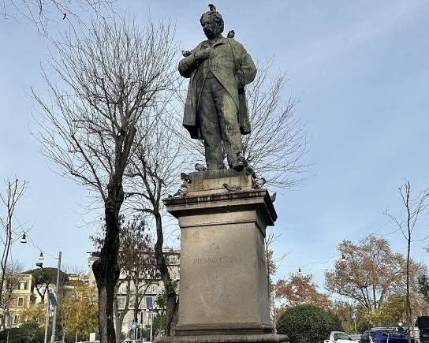
- Monumento a Pietro Cossa, dramaturgo romano do século XIX: é a estátua da foto, no Giardino Luigi Bigiarelli.
- Os dois jardins da praça, Ettore Troilo e Luigi Bigiarelli, com canteiros e árvores antigas.
- Casa de' Salvi, prédio de apartamentos de 1930 do arquiteto Pietro Aschieri, e os palacetes ecléticos em volta.
- A placa que lembra a fundação da Lazio, ali mesmo, em 9 de janeiro de 1900.
- Monumento aos caídos das forças da ordem, de Giorgio Bisanti (2014).
- A Ponte Regina Margherita, a poucos passos, com vista do Tibre e caminho direto para a Piazza del Popolo.
- A praça nasceu com a urbanização de Prati, iniciada em 1873 pelo plano urbanístico de Viviani, logo depois que Roma virou capital da Itália unificada. Retangular, é o ponto de partida do tridente formado pela Via Cola di Rienzo, Via dei Gracchi e Via Valadier, e se liga ao Lungotevere por duas rampas.
- Em 9 de janeiro de 1900, nove rapazes liderados por Luigi Bigiarelli fundaram aqui a Società Podistica Lazio, a atual S.S. Lazio. A placa comemorativa foi descerrada no centenário, em 2000.
- De 1906 a 1932, a praça foi o terminal do bonde Roma–Civita Castellana.
- Em 29 de maio de 1944, durante a ocupação alemã, um tiroteio na praça matou os carabinieri Enrico Zuddas e Salvatore Meloni, da resistência clandestina.
- A estátua de Pietro Cossa ficava no Largo Arenula; guardada por anos num depósito, foi trazida para cá por decisão da prefeitura em 1962.
- Parte da praça é aberta ao trânsito, e os carros chegam rápido pelas rampas do Lungotevere: atravessem sempre na faixa.
- Metrô mais próximo: Lepanto (linha A), a cerca de 10 minutos a pé.
- Para táxi ou Uber, use o endereço completo: Piazza della Libertà, 10.
- Mercados e supermercados por perto estão na página Hospedagem (botão no rodapé).
Pantheon e Piazza Navona
Um primeiro dia sem pressa: depois da chegada, um mergulho direto no coração barroco de Roma, das colunas do Pantheon às luzes de Natal da Piazza Navona, terminando no tridente da Piazza del Popolo.
- 14:00 – 15:15AApartamentoChegada às 14:00: descanso, banho e lanche. Saída às 15:15 de táxi.›
- 15:15 – 15:30Táxi até o PantheonCerca de 2,5 km: 10 a 15 minutos de carro num domingo à tarde, conforme o trânsito (a pé seriam uns 25 minutos). Dois carros para seis. Pelo Uber Taxi vem o táxi comum, cobrando pelo taxímetro.
- 16:00 – 16:28BPantheonCerca de 30 minutos. Ingresso com horário; reservar no GetYourGuide com audioguia.›
- 16:28 – 16:30Caminhada até Santa Maria sopra Minerva2 minutos, logo atrás do Pantheon.Mapa do trecho ›
- 16:30 – 16:45CSanta Maria sopra Minerva15 minutos. Ver o Elefantino de Bernini na praça.›
- 16:45 – 16:51Caminhada até a Piazza Navona6 minutos.Mapa do trecho ›
- 17:00 – 18:30DPiazza Navona1h30. Feira de Natal.›
- 18:30 – 18:50Caminhada até a Piazza di SpagnaCerca de 20 minutos (1,5 km): passando pelo Templo de Adriano, na Piazza di Pietra, e pela Via dei Condotti iluminada.Mapa do trecho ›
- 18:50 – 19:00EPiazza di Spagna10 minutos. Árvore de Natal na escadaria (não há feira de Natal ali).›
- 19:00 – 19:10Caminhada até a Piazza del PopoloCerca de 10 minutos pela Via Margutta, a rua dos artistas, paralela à Via del Babuino.Mapa do trecho ›
- 19:10 – 19:20FPiazza del Popolo10 minutos. Decoração de Natal.›
- 20:00 – 20:10Caminhada de volta para casa10 minutos pela Ponte Regina Margherita. Mercado e jantar.›Mapa do trecho ›
Dia no Vaticano
O dia desce, literalmente, às origens: primeiro a necrópole sob a Basílica, onde está o túmulo atribuído a Pedro; depois a própria Basílica e, ao entardecer, a feira de Natal aos pés do Castelo Sant'Angelo.
Confirmar com o Ufficio Scavi o horário de chegada. A pesquisa indica: chegar 20 a 30 minutos antes ao portão da Guarda Suíça à esquerda da colunata; a entrada dos Scavi tem revista própria (não é preciso a fila da Basílica); idade mínima de 15 anos; ombros e joelhos cobertos.
- 9:00 – 10:15AApartamentoTrabalho da Tóia das 9:00 às 10:00. Saída às 10:15 de táxi.›
- 10:15 – 10:30Táxi até a Praça de São PedroCerca de 2,5 km: 10 a 15 minutos numa manhã de segunda-feira. Pedir para descer no Largo di Porta Cavalleggeri ou na Piazza Pio XII, no fim da Via della Conciliazione. Dois carros para seis.
- 10:30 – 11:40BPraça de São PedroCerca de 1h10 livre: colunata, obelisco, fachada, presépio e árvore de Natal.›
- 11:40 – 11:45Caminhada até o Ufficio Scavi5 minutos até o portão da Guarda Suíça, à esquerda da colunata.Mapa do trecho ›
- 11:45 – 13:15CScavi: Necrópole VaticanaApresentação às 11:45 (30 minutos antes); visita das 12:15 às 13:15. Ingresso comprado.›
- 13:15 – 13:50Almoço: pizza
- 13:50 – 14:00Caminhada até a Basílica de São PedroCerca de 10 minutos, mais a fila de segurança.Mapa do trecho ›
- 14:00 – 16:00DBasílica de São Pedro2 horas, com guia ou audioguia.›
- 16:00 – 16:15Caminhada até o Castel Sant'Angelo15 minutos (1 km) pela Via della Conciliazione.Mapa do trecho ›
- 16:15 – 16:25ECastel Sant'Angelo10 minutos. Fechado às segundas: só vista externa.›
- 16:25 – 16:30Caminhada até a Piazza Adriana3 a 5 minutos, ao lado do castelo.Mapa do trecho ›
- 16:30 – 17:30FPiazza AdrianaCerca de 1 hora. Feira de Natal e patinação, sem edição anunciada para 2026; alternativa: pista de gelo da Piazza Cavour.›
- NoiteCaminhada até o Borgo PioCerca de 20 minutos do apartamento (8 minutos se sair direto da Piazza Adriana).Mapa do trecho ›
- NoiteGJantar no Borgo PioReserva às 19:00 na Osteria Nuvolari, Via degli Ombrellari, 10. Alternativa: Al Passetto di Borgo, Borgo Pio, 60–62.›
Roma Antiga
O dia do Império: a arena do Coliseu vista de dentro, o Fórum onde se decidia o mundo romano e o Palatino onde moravam os imperadores. À tarde, o cárcere onde a tradição situa Pedro e Paulo e, para fechar, a Via del Corso.
- 9:00AApartamentoSaída às 9:00 de táxi.›
- 9:00 – 9:25Táxi até o Coliseu15 a 25 minutos, conforme o trânsito. Dois carros para seis.
- 9:30 – 10:00Chegada à área do Coliseu30 minutos: café, banheiro e conferência do ingresso nominal.
- 10:00 – 11:00BColiseu com Arena1 hora, com guia.›
- 11:00 – 11:05Caminhada até o Fórum Romano e Palatino5 minutos até a entrada, junto ao Arco de Tito.Mapa do trecho ›
- 11:05 – 13:00CFórum Romano e PalatinoCerca de 2 horas, com guia.›
- 13:00 – 13:15Caminhada até a estação Colosseo10 a 15 minutos desde a saída do Fórum.Mapa do trecho ›
- 13:15 – 14:00Almoço: pizza ou sanduíche perto do metrô
- 14:00 – 14:15Caminhada até o Carcere Mamertino15 minutos (1 km) pela Via dei Fori Imperiali.Mapa do trecho ›
- 14:20 – 14:50DCarcere Mamertino30 minutos. Comprar ingressos.›
- 14:50 – 14:55Caminhada até a Piazza Venezia5 minutos, contornando o Vittoriano.Mapa do trecho ›
- 14:55 – 15:15EPiazza Venezia20 minutos: o Vittoriano e a praça.›
- 15:15 – 15:17Caminhada até a Via del CorsoA rua começa na própria Piazza Venezia e segue reta até a Piazza del Popolo (1,5 km).Mapa do trecho ›
- 15:17 em dianteFVia del CorsoTarde livre para compras.›
Museus Vaticanos e Trastevere
Entrada logo na abertura, antes das multidões, para percorrer as galerias até a Capela Sistina. À tarde, o mausoléu de Adriano por dentro e, ao cair da noite, um aperol em Trastevere.
- 7:10AApartamentoSaída às 7:10 de táxi.›
- 7:10 – 7:20Táxi até os Museus VaticanosCerca de 2 km: 8 a 10 minutos, com pouco trânsito tão cedo. Pedir para descer na entrada dos Museus, no Viale Vaticano. Dois carros para seis.
- 7:20 – 13:00BMuseus Vaticanos e Capela SistinaChegada por volta de 7:20, fila de segurança às 7:30, entrada às 8:00; cerca de 5 horas lá dentro. Ingresso comprado.›
- 13:00 – 13:15Caminhada até o Borgo Pio15 minutos (900 m).Mapa do trecho ›
- 13:15 – 14:30CAlmoço no Borgo PioCerca de 1 hora. Alternativa: almoçar em Prati.›
- 14:30 – 14:45Caminhada até o Castel Sant'Angelo10 a 15 minutos (700 m).Mapa do trecho ›
- 14:45 – 16:30DCastel Sant'Angelo1h30 a 2h, com audioguia.›
- 16:30 – 17:00Caminhada até TrastevereCerca de 30 minutos (2,2 km) pela margem do Tibre; atravessar pela Ponte Sisto, só para pedestres, até a Piazza Trilussa.Mapa do trecho ›
- 17:00 em dianteETrasteverePiazza Trilussa e Santa Maria in Trastevere.›
- 17:15Aperol e descanso
- Fim da tardeFTáxi para casa15 a 20 minutos. Dois carros para seis.
Testaccio, Borghese e Véspera de Natal
Uma manhã de sabores no bairro mais romano de Roma, onde nasceu a cozinha de quinto quarto; à tarde, Bernini e Caravaggio na Galleria Borghese. À noite, ceia e Missa de Natal.
- 9:30AApartamentoSaída às 9:30 de táxi.›
- 9:30 – 9:50Táxi até o Mercato Testaccio15 a 20 minutos. Dois carros para seis.
- 10:00 – 11:00BMercato Testaccio1 hora.›
- 11:00 – 11:05Caminhada até o Monte Testaccio5 minutos (cerca de 450 m), saindo do mercado pela Via Galvani.Mapa do trecho ›
- 11:05 – 11:25CMonte Testaccio e Piazza Testaccio20 minutos. A colina de ânforas quebradas; subida só com visita agendada, contar com a vista de fora.›
- 11:25 – 11:35Caminhada até La Bottega delle Idee e Volpetti8 a 10 minutos (cerca de 600 m) até a Via Marmorata.Mapa do trecho ›
- 11:35 – 11:55DLa Bottega delle Idee e Volpetti20 minutos. Utensílios, azeite, queijos e frios.›
- 11:55 – 12:00Caminhada até o Mercato Testaccio5 minutos (cerca de 400 m), de volta ao mercado para o almoço.Mapa do trecho ›
- 12:00 – 13:25Almoço no mercadoAlmoço cedo, cerca de 1h25. Pizza, sanduíche ou outra comida do mercado.
- 13:25 – 13:55Táxi até a Galleria Borghese25 a 30 minutos (cerca de 5 km). Dois carros para seis. Chegar uns minutos antes do turno.
- 14:00 – 16:00EGalleria Borghese2 horas, no turno das 14:00–16:00 (os turnos começam na hora cheia).›
- 16:00 – 16:20Caminhada até o Terraço do Pincio20 minutos atravessando os jardins da Villa Borghese, pela Piazza di Siena.Mapa do trecho ›
- 16:20 – 17:00FVilla Borghese e Terraço do Pincio40 minutos: jardins e a vista do pôr do sol sobre a Piazza del Popolo.›
- 17:00 – 17:05Caminhada até a Piazza del Popolo5 minutos (cerca de 400 m), descendo as rampas do Pincio.Mapa do trecho ›
- 17:05 – 17:15GPiazza del Popolo10 minutos de passagem pela praça iluminada.›
- 17:15 – 17:30HCaminhada para casa15 minutos (cerca de 1 km) pela Via Ferdinando di Savoia e a Ponte Regina Margherita até a Piazza della Libertà.Mapa do trecho ›
- 20:00Jantar de Véspera de NatalMesa para 6 às 20:00. Restaurante e endereço a definir; o trajeto entra no guia quando estiver definido.›
- Antes das 22hIda para a Basílica de São PedroCerca de 25 minutos a pé do apartamento, ou 10 de táxi. A revista de segurança demora: chegar o quanto antes.
- 22:00Missa da Noite de Natal›
Bênção do Papa e a Roma dos templos
A manhã de Natal na Praça de São Pedro, à espera da bênção Urbi et Orbi. Depois do almoço, um passeio a pé pelas camadas da cidade: o lugar da morte de César, o Gueto, os templos mais antigos de pé em Roma e o Circo Máximo.
- 9:001AApartamentoSaída às 9:00 a pé.›
- 9:00 – 9:30Caminhada até a Praça de São PedroCerca de 25 minutos (1,6 km), entrando pelas ruelas do Borgo Pio. A pé é melhor: na manhã de Natal há bloqueios de trânsito em volta da praça.Mapa do trecho ›
- 9:30 – 12:001BPraça de São PedroRevista de segurança e lugar na praça. A missa de Natal é às 10:00, dentro da Basílica, e a praça enche.›
- 12:00 – 12:30Mensagem de Natal e Bênção Urbi et Orbi30 minutos, da loggia central da Basílica.›
- 13:00 – 14:30Almoço de NatalMesa para 6 às 13:00 (1h30). Restaurante e endereço a definir; o trajeto entra no guia quando estiver definido.›
- 14:30 – 14:55Caminhada até a Piazza NavonaCerca de 25 minutos (1,7 km), por um dos trechos mais bonitos de Roma: a Via della Conciliazione, a Ponte Sant'Angelo com os anjos de Bernini e as ruelas da Via dei Coronari.Mapa do trecho ›
- 14:55 – 15:051CPiazza Navona10 minutos para o presépio de Natal e a feirinha da praça.›
- 15:05 – 15:12Caminhada até o Largo di Torre ArgentinaCerca de 7 minutos (500 m) pelo Corso del Rinascimento.Mapa do trecho ›
- 15:12 – 15:221DLargo di Torre Argentina10 minutos.›
- 15:22 – 15:28Caminhada até o Pórtico de OtáviaCerca de 6 minutos (450 m), entrando no Gueto pela Via Arenula e a Via di Santa Maria del Pianto.Mapa do trecho ›
- 15:28 – 15:381EPórtico de Otávia10 minutos.›
- 15:38 – 15:41Caminhada até o Teatro de Marcelo3 minutos.Mapa do trecho ›
- 15:41 – 15:511FTeatro de Marcelo10 minutos.›
- 15:51 – 15:52Caminhada até o Templo de Apolo Sosiano1 minuto, ao lado do teatro.Mapa do trecho ›
- 15:52 – 15:571GTemplo de Apolo Sosiano5 minutos.›
- 15:57 – 16:03Caminhada até os Arcos dos Argentários e de JanoCerca de 6 minutos (450 m) pela Via del Teatro di Marcello e o Vico Jugario.Mapa do trecho ›
- 16:03 – 16:082BArcos dos Argentários e de Jano5 minutos.›
- 16:08 – 16:11Caminhada até o Templo de Portuno3 minutos, descendo até a beira do Tibre.Mapa do trecho ›
- 16:11 – 16:152CTemplo de Portuno4 minutos. O retangular, com colunas jônicas.›
- 16:15 – 16:16Caminhada até o Templo de Hércules Vencedor1 minuto, atravessando o gramado.Mapa do trecho ›
- 16:16 – 16:202DTemplo de Hércules Vencedor4 minutos. O redondo, de mármore.›
- 16:20 – 16:22Caminhada até a Bocca della Verità2 minutos, do outro lado da praça.Mapa do trecho ›
- 16:22 – 16:302EBocca della Verità8 minutos, contando a fila para a foto.›
- 16:30 – 16:35Caminhada até o Circo Máximo5 minutos.Mapa do trecho ›
- 16:35 – 16:432FCirco Máximo8 minutos, com a vista do Palatino.›
- 16:43 – 16:55Caminhada até o RossoCerca de 12 minutos (900 m) pela Viale Aventino, até o número 32.Mapa do trecho ›
- 16:55 em diante2GCerveja no RossoRosso, Viale Aventino, 32. Mesa para seis às 17:00 (confirmar se abre no Natal).›
Palácios, Roma histórica e Fóruns iluminados
O dia dos palácios principescos: a Sala Grande dourada da Galleria Colonna pela manhã, depois Trevi, Campo de' Fiori, a Via Giulia e o fettuccine do Alfredo. No fim da tarde, sem pressa, a Via del Corso iluminada até o Capitólio e os Fóruns acesos.
- 8:451AApartamentoSaída às 8:45 de táxi.›
- 8:45 – 9:00Táxi até a Galleria ColonnaCerca de 15 minutos até a Via della Pilotta, 17. Dois carros para seis.
- 9:15 – 11:151BGalleria Colonna2 horas para os interiores, com calma. Ingresso comprado.›
- 11:15 – 11:22Caminhada até a Fontana di TreviCerca de 7 minutos (500 m).Mapa do trecho ›
- 11:22 – 12:001CFontana di TreviCerca de 40 minutos. Área junto à fonte paga desde 2026 (€ 2 por pessoa); a praça segue livre.›
- 12:00 – 12:30Caminhada até a Salumeria RoscioliCerca de 25 minutos (1,6 km), passando pelo Pantheon e seguindo pelas ruelas até a Via dei Giubbonari.Mapa do trecho ›
- 12:30 – 12:451DSalumeria Roscioli15 minutos. Parada condicionada à confirmação de abertura em Santo Stefano.›
- 12:45 – 12:47Caminhada até o Campo de' Fiori2 minutos.Mapa do trecho ›
- 12:47 – 13:001ECampo de' Fiori13 minutos.›
- 13:00 – 13:02Caminhada até a Piazza Farnese2 minutos.Mapa do trecho ›
- 13:02 – 13:201FPiazza Farnese18 minutos.›
- 13:20 – 13:23Caminhada até a Via Giulia3 minutos, passando sob o Arco Farnese.Mapa do trecho ›
- 13:23 – 14:002BVia GiuliaCerca de 40 minutos: Fontana del Mascherone e Arco Farnese.›
- 14:00 – 14:30Caminhada até o Il Vero AlfredoCerca de 30 minutos (2,2 km) pela Via dei Coronari, a rua dos antiquários. Se estivermos cansados, táxi.Mapa do trecho ›
- 14:45 – 16:302CAlmoço no Il Vero AlfredoReserva confirmada às 14:45 para seis. Piazza Augusto Imperatore, 30. Cerca de 1h45.›
- 16:30 – 16:50Caminhada até a Piazza VeneziaCerca de 20 minutos (1,6 km) descendo a Via del Corso, com as luzes de Natal e as vitrines. Chegada ao anoitecer, com o Vittoriano já iluminado.Mapa do trecho ›
- 16:50 – 17:002DPiazza Venezia e o Vittoriano iluminado10 minutos.›
- 17:00 – 17:05Caminhada até a Piazza del Campidoglio5 minutos, subindo a Cordonata de Michelangelo.Mapa do trecho ›
- 17:05 – 17:252EPiazza del Campidoglio20 minutos.›
- 17:25 – 17:27Caminhada até o Mirante do Fórum Romano2 minutos, por trás do Palazzo Senatorio.Mapa do trecho ›
- 17:27 – 17:452FMirante do Fórum Romano18 minutos: as ruínas do Fórum acesas, logo depois do pôr do sol.›
- 17:45 – 17:53Caminhada até a Coluna de Trajano8 minutos pela Via dei Fori Imperiali.Mapa do trecho ›
- 17:53 – 18:102GColuna e Fórum de Trajano17 minutos.›
- 18:10Volta para casaDe táxi, cerca de 15 minutos (a pé, uns 40).›
Leste de Roma e Catacumbas
A Roma cristã das origens e a arte da Roma antiga: a catedral do Papa e a Escada Santa logo cedo, antes das missas maiores; casas romanas escondidas sob uma igreja do Célio; os bronzes e afrescos do Palazzo Massimo; os mosaicos de Santa Maria Maggiore e, ao fim da tarde, as galerias subterrâneas das Catacumbas de Priscila.
- 7:40AApartamentoSaída às 7:40 de táxi.›
- 7:40 – 8:00Táxi até São João de LatrãoCerca de 20 minutos (domingo cedo, pouco trânsito). Dois carros para seis.
- 8:00 – 9:30BSão João de Latrão, Scala Santa e Batistério1h30. Basílica primeiro (8:00–8:50), antes da missa das 9:00 no altar papal; depois a Scala Santa, do outro lado da praça (8:50–9:15); por fim o Batistério, que abre às 9:00 (9:15–9:30). O Sancta Sanctorum só abre à tarde.›
- 9:30 – 9:55Caminhada até as Case Romane del CelioCerca de 25 minutos (1,5 km), passando pela igreja-fortaleza medieval dos Santi Quattro Coronati. As Case Romane abrem às 10:00.Mapa do trecho ›
- 10:00 – 10:50CCase Romane del CelioCerca de 50 minutos. Primeiros visitantes do dia.›
- 10:50 – 11:10Táxi até o Palazzo Massimo15 a 20 minutos (3 km). Chamar pelo app (FreeNow ou itTaxi) ou pegar no ponto de táxi do Coliseu, a 8 minutos a pé. Dois carros para seis.
- 11:10 – 12:40DPalazzo Massimo alle Terme1h30: térreo e primeiro andar (o Pugilista, o Príncipe helenístico) e o segundo andar (afrescos da Villa de Lívia).›
- 12:40 – 12:50Caminhada até Santa Maria MaggioreCerca de 10 minutos (800 m).Mapa do trecho ›
- 12:50 – 13:30ESanta Maria Maggiore40 minutos.›
- 13:30 – 13:35Caminhada até a Via Merulana5 minutos.Mapa do trecho ›
- 13:35 – 14:45FAlmoço na Via MerulanaCerca de 1h10, sem pressa.›
- 14:50 – 15:15Táxi até as Catacumbas de Priscila20 a 25 minutos; chegar até as 15:40. Dois carros para seis.
- 15:45 – 17:00GCatacumbas de PriscilaEncontro às 15:45, tour às 16:00. Ingressos comprados (6). Só com guia; faz frio lá embaixo.›
- 17:00Últimas compras ou uma cerveja
Rumo a Istambul
Nada programado em Roma: malas arrumadas na véspera, último café e partida sem pressa.
- ManhãAApartamentoÚltimo café, malas e check-out, sem pressa. Saída para o aeroporto de van.›
- DepoisTraslado ao aeroportoVan é o melhor para seis com bagagem.
- Voo Roma – Istambul
Panteão
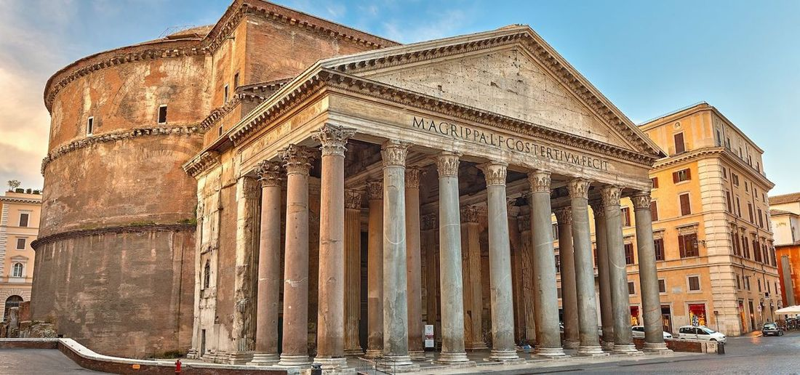
Erguido primeiro por Marco Agripa em 27 a.C. e inteiramente refeito por Adriano entre 118 e 125 d.C., o Panteão é o edifício da Roma antiga mais bem conservado que chegou até nós. Sua cúpula de concreto, cuja altura iguala o diâmetro de cerca de 43 metros, permanece um prodígio de engenharia, aberta ao céu pelo óculo de quase 9 metros. Em 609 o imperador bizantino Focas o cedeu ao papa Bonifácio IV, que o consagrou como igreja de Santa Maria ad Martyres — e foi essa conversão que o salvou da pilhagem medieval. Ali repousam Rafael e os primeiros reis da Itália unificada.
Pare no centro sob o óculo e observe a luz desenhando um círculo nos caixotões da cúpula; não deixe de ver o túmulo de Rafael e os sepulcros de Vítor Emanuel II e Umberto I. O botão dourado conta a história do bairro, para que o templo foi erguido e como a cúpula foi construída.
Piazza della Rotonda, 00186 Roma
Domingo 20/12: aberto 9h–19h (última entrada 18h30; bilheterias 9h–18h). Aos domingos há missa às 10h30, quando o acesso fica restrito aos fiéis — às 16h não há conflito. Fechado apenas em 25/12 e 1/1. Horário especial de dezembro não divulgado; o site avisa que celebrações religiosas podem alterá-lo.
Inteira € 7 (valor em vigor desde 1/7/2026); reduzida € 2 para 18–25 anos (redução prevista para cidadãos da UE — verificar aplicabilidade a brasileiros); grátis abaixo de 18. Entrada por faixa horária; reserva 'facultativa', mas é preciso ter bilhete oficial (portal/app Museiitaliani, caixas e totens no local). As vendas de cada mês abrem por volta da metade do mês anterior — para dezembro, a partir de meados de novembro. Não há fura-fila.
Comprem os 6 bilhetes das 16h no portal Museiitaliani assim que a agenda de dezembro abrir (meados de novembro): o limite por usuário e faixa aparece de forma divergente no site (10 ou 25), mas 6 cabe em qualquer caso.
A comprar Pantheon — € 7 por pessoa; GetYourGuide com audioguia ou portal oficial.
Panteão: a região, o templo e a cúpula
O Panteão fica no coração do antigo Campo de Marte, a grande planície entre o Capitólio, o Quirinal e a curva do Tibre. Nos primeiros séculos de Roma era terreno aberto, fora do limite sagrado da cidade, e por isso dedicado a Marte, o deus da guerra. Ali os soldados treinavam e os cidadãos se reuniam em armas para votar.
No fim da República a planície começou a ser ocupada por grandes edifícios. Pompeu construiu ali o seu teatro, o primeiro de pedra em Roma (é a Cúria desse complexo que vocês veem no Largo Argentina).
A grande transformação veio com Marco Agripa, genro e braço direito de Augusto, por volta de 25 a.C. Ele fez do Campo de Marte uma vitrine do novo regime: as primeiras termas públicas de Roma, logo atrás do Panteão; um lago artificial com canal; a Saepta Julia, enorme recinto de votação coberto de pórticos; e o próprio Panteão. Augusto acrescentou, mais ao norte, o seu Mausoléu, o Altar da Paz e um gigantesco relógio de sol, cujo ponteiro era o obelisco que hoje está em Montecitório.
Os imperadores seguintes continuaram enchendo o bairro: Domiciano fez o estádio cujo formato a Piazza Navona conserva até hoje; ao lado do Panteão havia o templo de Ísis, de onde vem o pequeno obelisco do elefante de Bernini, na Piazza della Minerva; e o templo do divino Adriano ainda mostra suas colunas na Piazza di Pietra.
Na Idade Média, quando os aquedutos foram cortados, os romanos abandonaram as colinas e se mudaram para essa planície junto ao rio. Por isso o centro histórico que vocês percorrem a pé, de Navona à Fontana di Trevi, está construído em cima do Campo de Marte.
O nome vem do grego e quer dizer "de todos os deuses". O primeiro templo foi erguido por Agripa entre 27 e 25 a.C. Segundo o historiador Dião Cássio, Agripa queria dedicá-lo a Augusto e colocar a estátua do imperador lá dentro. Augusto recusou a homenagem, que soaria como culto a um homem vivo. A estátua de Augusto e a de Agripa ficaram então no pórtico de entrada, e dentro ficaram as estátuas de Marte e Vênus, os deuses dos quais a família de Júlio César dizia descender, junto com o próprio César divinizado.
Ou seja: além de templo, era um monumento político, que ligava a dinastia de Augusto aos deuses protetores de Roma.
O edifício de Agripa pegou fogo em 80 d.C., foi restaurado e voltou a queimar depois de um raio, por volta de 110. O imperador Adriano o reconstruiu do zero entre 118 e 125, com o formato inédito que conhecemos. Com modéstia calculada, mandou repetir na fachada a inscrição antiga: M·AGRIPPA·L·F·COS·TERTIVM·FECIT, "Marco Agripa, filho de Lúcio, cônsul pela terceira vez, o fez". Por isso a fachada leva o nome de quem morreu quase 150 anos antes da obra.
A grande ideia de Adriano foi o simbolismo: a cúpula representa a abóbada celeste, e o óculo é o sol, o olho que tudo vê. Ao longo do dia, o círculo de luz percorre o interior como um relógio. Num templo comum, o deus morava numa cela escura; aqui o próprio céu entra no edifício. Dião Cássio conta ainda que Adriano usava o Panteão para receber pessoas e julgar causas, como uma sala de audiências imperial.
Em 609 o imperador bizantino Focas doou o templo ao papa Bonifácio IV, que o consagrou a Santa Maria e a todos os mártires. Foi essa conversão em igreja que o salvou: é o único grande edifício da Roma antiga em uso contínuo há quase dois mil anos.
A cúpula tem 43,3 metros de diâmetro, e a altura do piso ao topo é exatamente a mesma. Uma esfera perfeita caberia lá dentro, tocando o chão. Quase dois mil anos depois, continua sendo a maior cúpula de concreto sem armação de ferro do mundo. Foi maior que qualquer outra até a cúpula de Brunelleschi em Florença, no século XV, e Brunelleschi estudou o Panteão para construí-la.
Os romanos dominavam um concreto feito de cal e pozolana, uma cinza vulcânica da região que endurece até debaixo d'água. O truque do Panteão foi mudar a pedra misturada ao concreto conforme a altura: na base, travertino e tufo, pesados e resistentes; no meio, tijolo e tufo; perto do topo, pedra-pomes e escória vulcânica, tão leves que quase flutuam. Assim a cúpula pesa muito menos onde pesaria mais perigosamente.
A espessura também diminui: são cerca de 6 metros na base e pouco mais de 1 metro junto ao óculo.
Os 140 caixotões, cinco anéis de 28 nichos quadrados, não são só decoração: retiram toneladas de peso da cúpula sem tirar resistência. Eles também criam o efeito de perspectiva que faz a cúpula parecer ainda mais alta. Acredita-se que tinham rosetas de bronze dourado, como um céu estrelado.
O buraco no topo tem quase 9 metros de diâmetro e nunca teve vidro. No topo de uma cúpula é onde o peso mais atrapalha, então os romanos simplesmente o tiraram, e um anel de tijolos trabalha em compressão para segurar a borda. Quando chove, a água cai mesmo lá dentro: o piso é levemente abaulado e tem 22 furinhos que escoam a chuva.
A cúpula foi moldada sobre um enorme cimbre de madeira, um andaime em forma de meia esfera que sustentou o concreto até ele endurecer. O concreto era assentado em camadas horizontais, de baixo para cima. Por fora, anéis em degraus na base da cúpula funcionam como contrafortes, e as paredes do tambor, com 6 metros de espessura, escondem arcos de tijolo que desviam o peso para oito pilares.
As 16 colunas da entrada são monólitos de granito egípcio, cada um com cerca de 12 metros e 60 toneladas. Vieram de pedreiras do deserto oriental do Egito, desceram o Nilo, cruzaram o Mediterrâneo e subiram o Tibre. O telhado do pórtico era revestido de bronze, retirado em 1625 pelo papa Urbano VIII Barberini, em grande parte para fundir canhões. Daí o ditado romano: "o que os bárbaros não fizeram, fizeram os Barberini".
Parem no centro e olhem para cima: o círculo de luz na cúpula mostra a hora do dia. Reparem no piso de mármores coloridos, em grande parte ainda o original romano. Do lado de fora, procurem a inscrição de Agripa e, na lateral, o bloco de ligação entre o pórtico e a rotunda, onde os dois volumes não se encaixam bem: um sinal de mudança de projeto durante a obra.
Lá dentro estão o túmulo de Rafael, com o epitáfio em latim de Pietro Bembo, e os sepulcros dos reis Vítor Emanuel II e Umberto I.
‹ Voltar a PanteãoBasílica de Santa Maria sopra Minerva e o Elefantino de Bernini
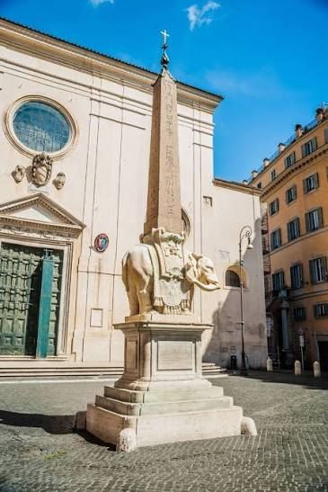
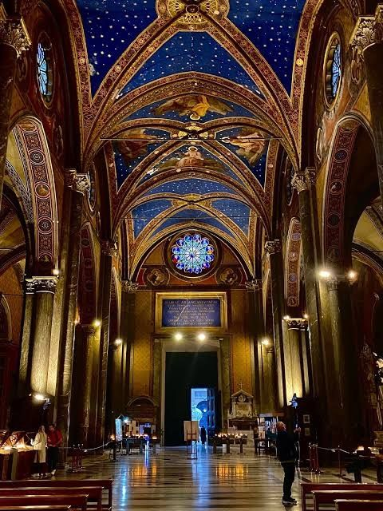
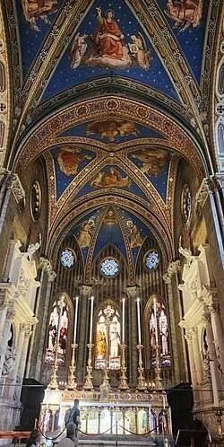
A poucos passos do Panteão, é a única grande igreja gótica de Roma. O nome vem da crença medieval de que fora erguida sobre um templo de Minerva; na verdade, boa parte dela está sobre o grande santuário de Ísis do Campo de Marte, de onde vem o obelisco da praça. Os dominicanos a reconstruíram a partir de 1280, e sob a abóbada azul estrelada repousam Santa Catarina de Siena e o pintor Fra Angelico. Os botões dourados contam a história dos templos, da igreja e do elefantinho.
O Cristo Ressuscitado de Michelangelo junto ao presbitério e, na praça, o 'Pulcino della Minerva' — o elefantinho que sustenta o obelisco, concebido por Bernini e executado por Ercole Ferrata em 1667.
Horários de visita sem confirmação oficial.
Piazza della Minerva, 42, 00186 Roma
Segundo o Museionline (não oficial): todos os dias 10h30–12h30 e 15h–19h. Missas: domingo 11h e 18h (Turismo Roma). Às 16h30 de domingo 20/12 a igreja deve estar aberta para visita — horário de dezembro não confirmado em fonte oficial; verificar (+39 06 69920384).
Gratuito.
Comecem pelo elefantinho na praça (visível a qualquer hora) e entrem na igreja antes das 18h, quando começa a missa dominical e a visita turística fica inconveniente.
Santa Maria sopra Minerva: dos templos à igreja
A igreja fica no mesmo Campo de Marte do Panteão, a poucos passos dele. Na época imperial, este trecho era tomado por grandes santuários e pórticos. Dois deles importam para entender o nome da igreja.
O primeiro era um templo de Minerva, chamado de Minerva Calcídica. As fontes antigas ligam a sua origem a Pompeu, que dedicou um santuário à deusa com os despojos das suas vitórias no Oriente, e contam que o imperador Domiciano o reconstruiu no fim do século I. Era um templo pequeno, provavelmente redondo, e a sua posição exata nunca foi encontrada. Os arqueólogos o situam aqui perto, mas provavelmente não exatamente debaixo da igreja.
O segundo, bem maior, era o Iseu Campense, o santuário de Ísis e Serápis, os deuses egípcios. Foi decretado em 43 a.C., destruído por um incêndio em 80 d.C. e reconstruído com luxo por Domiciano. Ocupava uma faixa comprida entre o Panteão e a atual Via del Seminario, e era decorado com obeliscos, esfinges e estátuas trazidas do Egito. As escavações mostram que boa parte da igreja e do convento está sobre a área desse santuário.
Na Idade Média, os romanos viam ruínas de templos debaixo e em volta da igreja e acreditavam que eram do templo de Minerva, a deusa mais famosa associada ao lugar. Daí o nome: Santa Maria "sopra Minerva", isto é, Santa Maria construída "sobre Minerva". Os primeiros documentos já a chamam de Santa Maria in Minervum.
Hoje se sabe que as ruínas debaixo da igreja eram, na maior parte, do santuário de Ísis, e não de Minerva. Mas o nome ficou, e carrega uma ideia bonita: a Virgem Maria, símbolo da sabedoria cristã, erguida sobre a deusa pagã da sabedoria.
Dentro da igreja não há ruínas à vista: os restos antigos estão vários metros abaixo do piso, em porões e fundações. Mas o santuário de Ísis deixou marcas por todo o bairro, e dá para caçá-las a pé:
O obelisco que o elefantinho de Bernini carrega veio do Iseu, assim como o obelisco da fonte em frente ao Panteão. Outro obelisco do mesmo santuário está hoje diante da estação Termini, e um quarto foi parar no Jardim de Boboli, em Florença.
Na esquina da Via della Gatta, no alto de uma cornija do Palazzo Grazioli, há uma gatinha de mármore: uma estátua de animal egípcio do santuário. A Via del Piè di Marmo leva o nome de um enorme pé de mármore, também romano, que ainda está na rua. E a Madama Lucrezia, a grande cabeça feminina junto à basílica de San Marco, na Piazza Venezia, seria uma estátua de Ísis.
As famosas estátuas dos rios Nilo e Tibre, hoje nos Museus Vaticanos e no Louvre, foram desenterradas aqui ao lado da igreja no início do século XVI.
Minerva era a deusa romana da sabedoria, das artes, dos ofícios e da estratégia na guerra, equivalente à Atena dos gregos. Protegia artesãos, médicos, professores e poetas. Era uma das três divindades mais importantes de Roma, a chamada Tríade Capitolina, cultuada com Júpiter e Juno no grande templo do Capitólio. Era representada com elmo, lança, escudo e uma coruja, símbolo da sabedoria.
Ísis era uma deusa egípcia, esposa de Osíris e mãe de Hórus. Era a grande mãe protetora, senhora da magia, da cura e do renascimento, e protegia os marinheiros. O seu culto se espalhou por todo o Mediterrâneo e chegou a Roma no século II a.C. A princípio, o Senado e Augusto desconfiavam dessa religião estrangeira e chegaram a proibi-la dentro da cidade. Depois ela conquistou os imperadores: Vespasiano e Tito passaram a noite no Iseu antes do seu triunfo, em 71, e Domiciano o reconstruiu com grande luxo.
No século VIII, o papa Zacarias (741–752) cedeu um pequeno oratório nas ruínas a monjas gregas que fugiam de Constantinopla, na época da perseguição às imagens sagradas. Foi a primeira igreja no local, dedicada a Santa Maria.
Em 1275 o lugar passou aos frades dominicanos, que precisavam de uma grande igreja para pregar em Roma. A partir de 1280 começaram a construção atual, com projeto atribuído a dois frades florentinos, Sisto e Ristoro, os mesmos de Santa Maria Novella, em Florença. Por isso é a única grande igreja gótica de Roma: um estilo toscano, raro numa cidade de basílicas antigas e de igrejas barrocas.
A obra levou mais de um século. Santa Catarina de Siena, padroeira da Itália e da Europa, morreu em Roma em 1380 e está sepultada sob o altar-mor. O pintor Fra Angelico, ele mesmo um frade dominicano, está enterrado à esquerda do altar. No convento ao lado, em 1633, Galileu Galilei foi obrigado a renegar a teoria de que a Terra gira em torno do Sol.
A fachada é simples, do século XV, e guarda placas que marcam até onde chegaram as enchentes do Tibre. O interior ganhou entre 1848 e 1855 a decoração neogótica que vocês veem hoje, com a abóbada azul cheia de estrelas.
À esquerda do altar-mor está o Cristo Ressuscitado de Michelangelo (1519–1521). O pano de bronze sobre a cintura foi acrescentado depois, por pudor. No transepto direito, a Capela Carafa tem afrescos de Filippino Lippi. Debaixo do altar está a urna de Santa Catarina de Siena, e perto dele fica o túmulo de Fra Angelico. Na fachada, procurem as placas das enchentes, algumas na altura das suas cabeças.
‹ Voltar a MinervaO Elefantinho de Bernini e o obelisco
Em 1665, os dominicanos acharam no jardim do convento um pequeno obelisco egípcio enterrado. Era mais um resto do santuário de Ísis que existia ali. O papa Alexandre VII Chigi, grande promotor de obras em Roma, decidiu levantá-lo na praça em frente à igreja.
O projeto ficou com Gian Lorenzo Bernini, já idoso e o maior artista da cidade. Ele desenhou um elefante carregando o obelisco nas costas. A escultura foi executada por seu assistente Ercole Ferrata e inaugurada em 1667.
Um frade dominicano, Domenico Paglia, tinha apresentado um projeto rival e insistiu que o elefante não aguentaria o peso com a barriga oca. Bernini foi obrigado a pôr um bloco de pedra sob a barriga, disfarçado pela manta que cai até o chão. Por isso o elefante ficou baixinho e atarracado, e os romanos o apelidaram de "porcino", o porquinho. Com o tempo, o apelido virou "Pulcino della Minerva", o pintinho da Minerva.
Diz a lenda que Bernini se vingou do frade: o elefante vira o traseiro para o convento dos dominicanos, com o rabo levemente desviado para o lado, e a cabeça vira para trás, como quem olha com ironia. É só lenda, mas olhem a posição do rabo.
Bernini se inspirou numa gravura de um livro famoso do Renascimento, o Sonho de Polífilo (1499), que mostra um elefante carregando um obelisco. Para os estudiosos do século XVII, os hieróglifos guardavam a sabedoria divina dos antigos egípcios. O elefante, por sua vez, era símbolo de força, inteligência e piedade.
A inscrição em latim na base explica a mensagem: quem vê o animal mais forte de todos carregando os sinais da sabedoria do Egito deve entender que é preciso uma mente robusta para sustentar uma sabedoria sólida. No topo do obelisco estão os montes e a estrela do brasão da família Chigi, a do papa, e uma cruz: a sabedoria antiga a serviço da fé cristã.
É o menor obelisco de Roma, com cerca de 5,5 metros. É de granito vermelho e foi esculpido no Egito no século VI a.C., no reinado do faraó Apriés, para um templo da cidade de Saís, no delta do Nilo. Os hieróglifos falam do faraó e dos deuses de Saís.
Foi trazido a Roma na época imperial, provavelmente no tempo de Domiciano, para decorar o santuário de Ísis do Campo de Marte, ao lado do obelisco que hoje está em frente ao Panteão. Ficou enterrado durante séculos, até os frades o encontrarem em 1665. Um obelisco gêmeo, do mesmo templo egípcio, está hoje em Urbino.
‹ Voltar a MinervaPiazza di Spagna e a Escadaria da Trinità dei Monti
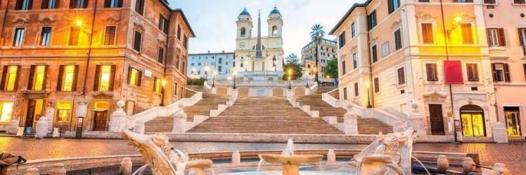
A escadaria, projetada por Francesco De Sanctis e construída entre 1723 e 1726 sob o papa Inocêncio XIII, liga a praça à igreja da Trinità dei Monti, fundada em 1495, e transformou o lugar no 'salão de visitas' de Roma. Aos pés dos degraus, a Fonte da Barcaccia, de Pietro Bernini (pai de Gian Lorenzo), evoca um barco semiafundado — talvez uma lembrança das barcas do porto de Ripetta e das cheias do Tibre. Ao redor, a Via Condotti e o casarão de Keats e Shelley dão o tom elegante do bairro.
A vista da praça a partir do alto da escadaria e, no Natal, a árvore montada nos degraus (12 m em 2025) e as esferas iluminadas suspensas na Via dei Condotti.
Não há mercado de Natal na Piazza di Spagna: as listagens oficiais de 2025–26 (Turismo Roma) não o mencionam; o único registro encontrado é de 2018–19. O atrativo natalino ali é a árvore na escadaria e as luzes da Via Condotti/Via del Babuino — ajustar o roteiro.
Piazza di Spagna, 00187 Roma
Espaço público, acesso livre a qualquer hora.
Gratuito.
Evitem sentar-se nos degraus — a prática é coibida pela fiscalização municipal (regra não confirmada na fonte consultada, mas amplamente aplicada); fotografem de cima, junto à igreja.
Piazza del Popolo
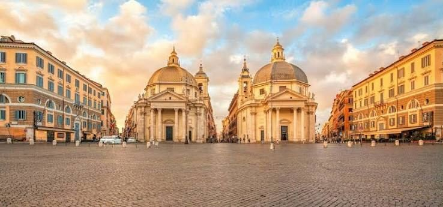
Porta norte da cidade para quem chegava pela Via Flamínia, a praça ganhou sua forma oval neoclássica com Giuseppe Valadier entre 1811 e 1822, que a ligou por rampas e terraços ao Pincio. Ao centro ergue-se o obelisco Flamínio, egípcio do tempo de Ramsés II, trazido por Augusto para o Circo Máximo e transferido para cá por Sisto V em 1589. Ao sul, as igrejas 'gêmeas' de Santa Maria dei Miracoli e Santa Maria in Montesanto emolduram a abertura do Tridente — Via del Corso, Via del Babuino e Via di Ripetta.
No Natal, a grande árvore oficial da cidade (em 2025, um abeto natural de mais de 20 m); de dia, os dois Caravaggio da Capela Cerasi em Santa Maria del Popolo.
A árvore e as luzes de 2026 ainda não foram anunciadas; a informação se baseia na edição 2025–26 (árvore na Piazza del Popolo, acesa em 8/12/2025).
Piazza del Popolo, 00187 Roma
Praça pública, acesso livre. Igrejas: provavelmente fechadas às 19:10 de domingo; detalhes em "As igrejas da praça".
Gratuito.
Façam o trajeto pela Via del Babuino, que em 2025 recebeu arcos luminosos; ao chegar, olhem para trás em direção às igrejas gêmeas — a perspectiva do Tridente iluminado é a melhor foto da noite.
Piazza del Popolo: a história
Em 220 a.C., o censor Caio Flamínio abriu a Via Flamínia, a grande estrada que ligava Roma ao mar Adriático, em Rimini, a uns 330 km daqui. Ela era a principal entrada de Roma para quem vinha do norte: exércitos, comerciantes e, mais tarde, peregrinos e viajantes de toda a Europa.
No fim do século III d.C., o imperador Aureliano cercou a cidade com muralhas, e a estrada passou a entrar por uma porta chamada Porta Flaminia. É a atual Porta del Popolo, no lado norte da praça. Do lado de fora, como mandava a lei romana, a estrada era ladeada por túmulos. Na encosta do Pincio ficava o túmulo da família dos Domícios, onde, segundo o historiador Suetônio, foram depositadas as cinzas de Nero.
Sim, de certa forma. As pedras antigas não aparecem na praça, mas o traçado da estrada continua em uso há mais de 2.200 anos.
O trecho urbano da Flamínia, que os romanos chamavam de Via Lata, é exatamente a Via del Corso, a rua reta que sai da praça entre as duas igrejas gêmeas e vai até a Piazza Venezia.
Atravessando a Porta del Popolo, a rua que segue para o norte ainda se chama Via Flaminia. A uns 2,5 km fica a Ponte Milvio, a ponte romana por onde a estrada cruzava o Tibre, perto de onde Constantino venceu a batalha de 312. O bonde 2, que sai da Piazzale Flaminio, logo depois da porta, percorre esse trecho. Trechos com o calçamento romano original só aparecem bem mais longe, fora de Roma.
Diz a tradição que, em 1099, o papa Pascoal II mandou cortar uma nogueira que crescia sobre o suposto túmulo de Nero, onde corvos e espíritos assombravam os passantes, e ergueu ali uma capela. O povo de Roma pagou a obra, e daí viria o nome Santa Maria del Popolo, a igreja do povo. Outra explicação é mais simples: "populus", em latim, também quer dizer choupo, uma árvore que crescia por ali.
Durante séculos, foi por esta porta que chegaram os peregrinos, os reis e os embaixadores. A fachada externa da porta foi refeita em 1562–1565 para o papa Pio IV. A fachada interna é de Bernini, decorada em 1655 para receber a rainha Cristina da Suécia, que tinha abdicado do trono e se convertido ao catolicismo. A inscrição diz: "para uma entrada feliz e auspiciosa".
No século XVI, os papas abriram as três ruas retas que saem da praça em leque, o chamado Tridente: a Via di Ripetta, o Corso e a Via del Babuino. As igrejas gêmeas vieram no século seguinte, para emoldurar a vista.
A praça era o palco do Carnaval: dali largava a corrida de cavalos sem cavaleiro que descia a Via del Corso, e é dessa corrida que a rua tirou o nome. Também era o lugar das execuções públicas, que aconteceram aqui até o início do século XIX.
O obelisco Flamínio é um dos mais antigos de Roma. É de granito vermelho e tem cerca de 24 metros, ou 36 com a base. Foi esculpido em Heliópolis, a cidade do Sol, no Egito, no século XIII a.C.: começou no reinado do faraó Seti I e foi terminado por seu filho Ramsés II, que o cobriu de hieróglifos com os seus títulos.
Depois de conquistar o Egito, Augusto mandou trazê-lo a Roma em 10 a.C., como troféu e como homenagem ao Sol. A viagem era uma façanha: o obelisco descia o Nilo em balsas até Alexandria e cruzava o Mediterrâneo num navio gigante, construído só para isso. Segundo Plínio, o navio era tão impressionante que Augusto o deixou exposto no porto de Pozzuoli. Depois, a pedra subiu o Tibre em barcaças e foi arrastada sobre rolos de madeira até o Circo Máximo, onde decorou o canteiro central da pista.
Com o fim do império, o obelisco caiu, partiu-se em três pedaços e ficou enterrado. Foi reencontrado em 1587, e o papa Sisto V mandou o arquiteto Domenico Fontana restaurá-lo e erguê-lo aqui em 1589, no centro da entrada norte da cidade, como um marco para quem chegava.
A forma oval que vocês veem é do arquiteto Giuseppe Valadier, entre 1811 e 1822, em parte na época em que Roma esteve sob Napoleão. Ele abriu as duas grandes curvas laterais, com as fontes de Netuno, a oeste, e de Roma entre o Tibre e o Aniene, a leste, e ligou a praça ao terraço do Pincio por rampas e jardins. Em 1823 acrescentou os quatro leões de estilo egípcio em volta do obelisco, que jorram água.
Hoje a praça é toda para pedestres e recebe concertos, manifestações e, no Natal, a grande árvore da cidade.
‹ Voltar a Piazza del PopoloAs igrejas da Piazza del Popolo
As "igrejas gêmeas" emolduram a entrada da Via del Corso, no famoso tridente de ruas. Olhando da praça, Santa Maria in Montesanto fica à esquerda, entre a Via del Babuino e o Corso, e Santa Maria dei Miracoli à direita, entre o Corso e a Via di Ripetta. Foram uma iniciativa do papa Alexandre VII, pagas pelo cardeal Girolamo Gastaldi, cujo brasão aparece nas duas. O projeto é de Carlo Rainaldi: a primeira pedra de Montesanto foi lançada em 15 de julho de 1662, os planos foram revistos por Bernini e a obra terminou com Carlo Fontana em 1675. Miracoli foi erguida entre 1675 e o início da década de 1680. Parecem idênticas, mas não são: os terrenos tinham formatos diferentes, então Montesanto tem planta elíptica e cúpula de doze lados, e Miracoli tem planta circular e cúpula de oito lados. Da praça, um truque de ótica faz as duas parecerem iguais. Montesanto é conhecida como a "Igreja dos Artistas": de outubro a junho, aos domingos, celebra-se ali a Missa dos Artistas.
A terceira igreja da praça, a mais antiga, fica colada à Porta del Popolo. Diz a tradição que o papa Pascoal II ergueu ali uma capela em 1099, no lugar onde estaria enterrado Nero, para afastar os maus espíritos que assombravam o local. A igreja foi reconstruída no fim do século XV e reformada por Bernini no século XVII. Lá dentro estão dois tesouros: a Capela Cerasi, à esquerda do altar-mor, com dois Caravaggio, a Conversão de São Paulo e a Crucificação de São Pedro (c. 1600–1601), e a Capela Chigi, projetada por Rafael, com esculturas de Bernini. A entrada é gratuita.
Provavelmente não, no horário do roteiro (19:10–19:20 de domingo). Santa Maria dei Miracoli fecha às 19:00 aos domingos. Santa Maria del Popolo abre aos domingos à tarde até cerca das 19:00, tem missa às 18:30 e não recebe visitantes durante a missa. Santa Maria in Montesanto não divulga horário de visita; a única missa de domingo é ao meio-dia. Fontes: Turismo Roma, Audiala e The Catholic Traveler, consultados em outubro de 2026. Os horários de Natal podem mudar, então vale confirmar perto da viagem. Alternativa: no dia 24, depois do Terraço do Pincio (que fica bem em cima da praça), descer à Piazza del Popolo por volta das 17:00 e visitar Santa Maria del Popolo e os Caravaggio, que nos dias úteis costuma abrir até as 19:00.
‹ Voltar a Piazza del PopoloPraça de São Pedro
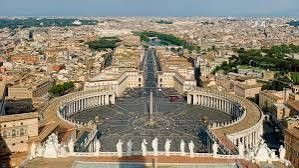
Concebida por Gian Lorenzo Bernini entre 1656 e 1667, a praça é abraçada por duas colunatas elípticas de 284 colunas, que o próprio arquiteto descreveu como os braços maternos da Igreja acolhendo os fiéis. No centro ergue-se o obelisco egípcio trazido a Roma por Calígula e reposicionado ali em 1586. Mais do que um espaço monumental, é o palco das grandes aparições do papa diante do mundo. No Natal, ganha a árvore e o presépio monumental, montados todos os anos com doações de diferentes regiões.
Pisar um dos dois discos de pórfiro entre o obelisco e as fontes, de onde as quatro fileiras de colunas se alinham numa só; à noite, a árvore e o presépio iluminados.
25/12: postos de polícia ao longo da Via della Conciliazione e da Piazza Risorgimento; acesso lento e espaço limitado — chegar com 2 a 3 horas de antecedência se quiserem ficar próximos.
Piazza San Pietro, 00120 Cidade do Vaticano
Espaço aberto, acesso livre (com controles de segurança em grandes celebrações). Em 25/12 a praça é isolada desde cedo para a missa e a bênção Urbi et Orbi; recomenda-se passar pela revista entre 9h e 10h. A exposição '100 Presepi in Vaticano', sob a colunata, é indicada como de visita livre (datas de 2026 não confirmadas).
Gratuito; não é necessário ingresso para a praça na bênção Urbi et Orbi.
Na segunda, 21/12, passear pela praça entre os Scavi e a basílica; voltar ao anoitecer para ver árvore e presépio acesos com menos gente do que no fim de semana. No dia 25, evitar garrafas de vidro, garrafas térmicas metálicas, paus de selfie e mochilas volumosas.
Praça de São Pedro: a história
Na época de Roma antiga, este lugar nem fazia parte da cidade. Ficava do outro lado do Tibre, fora das muralhas, numa região chamada Ager Vaticanus, o "campo vaticano". A origem do nome é incerta: pode vir de uma antiga aldeia etrusca, Vaticum, ou dos vaticinia, as profecias dos adivinhos que, segundo a tradição, atuavam por ali.
Era uma planície baixa e úmida, sujeita às cheias do rio e com fama de insalubre, ao pé de uma colina de argila usada para fazer tijolos e potes. O vinho produzido ali era considerado ruim: o poeta Marcial brincava que o vinho do Vaticano era quase um veneno.
No século I d.C., a família imperial transformou a área em jardins de lazer. Os mais famosos foram os jardins de Agripina, a mãe do imperador Calígula, que se estendiam até o rio, com pórticos e passeios à beira d'água.
Foi nos jardins da mãe que Calígula começou a construir um circo, uma pista longa para corridas de carros. Para decorar a spina, o muro central da pista, ele trouxe de Alexandria, no Egito, em 37 d.C., um obelisco de granito vermelho de cerca de 25 metros, transportado num navio gigantesco construído só para isso. É o mesmo obelisco que hoje está no centro da praça.
O circo foi concluído e muito usado por Nero, que adorava as corridas, e por isso ficou conhecido como Circo de Nero. Depois do grande incêndio de Roma, em 64 d.C., Nero culpou os cristãos e os perseguiu. O historiador Tácito conta que muitos foram mortos de forma cruel nos jardins e no circo do Vaticano, alguns usados como tochas humanas para iluminar a noite.
Ao lado do circo passava uma estrada, a Via Cornelia, ladeada por túmulos, como era costume romano: uma necrópole, ou "cidade dos mortos", com mausoléus de famílias pagãs e, aos poucos, também sepulturas cristãs.
Segundo a tradição, o apóstolo Pedro foi martirizado durante a perseguição de Nero, entre 64 e 67 d.C., crucificado de cabeça para baixo, porque não se considerava digno de morrer como Jesus. Seu corpo teria sido enterrado num túmulo simples nessa necrópole, na encosta da colina vaticana.
Os cristãos passaram a venerar o lugar. Por volta de 160 d.C., ergueram sobre o túmulo um pequeno monumento, o "Troféu de Gaio", citado por um padre romano chamado Gaio por volta do ano 200. As escavações feitas sob a basílica entre 1939 e 1949 encontraram essa necrópole e o troféu, exatamente debaixo do altar-mor. É essa a visita dos Scavi que faremos no mesmo dia.
Depois de legalizar o cristianismo, o imperador Constantino mandou construir, por volta de 320, uma enorme basílica sobre o túmulo de Pedro. Para isso, aterrou a necrópole e cortou a encosta da colina, para que o altar ficasse exatamente sobre o túmulo. A antiga São Pedro tinha cinco naves, mais de 100 metros de comprimento e um grande átrio na frente, o "Paraíso", com uma enorme pinha de bronze que hoje está nos Museus Vaticanos.
Por mais de mil anos, foi o centro da cristandade e destino de peregrinos de toda a Europa. Ali Carlos Magno foi coroado imperador no dia de Natal do ano 800.
No século XV, a velha basílica estava em ruínas, com paredes inclinadas. O papa Nicolau V começou a planejar uma reforma em meados do século, mas foi Júlio II quem tomou a decisão radical: demolir a basílica de Constantino e construir outra. A pedra fundamental da nova São Pedro foi lançada em 18 de abril de 1506, com projeto de Bramante.
A obra durou 120 anos e passou pelas mãos dos maiores artistas da época: Bramante, Rafael, Antonio da Sangallo e, a partir de 1546, Michelangelo, que redesenhou o projeto e a cúpula. Depois da morte dele, a cúpula foi terminada por Giacomo della Porta e Domenico Fontana em 1590. Carlo Maderno alongou a nave e fez a fachada (1607–1614), e a basílica foi consagrada por Urbano VIII em 18 de novembro de 1626. Por fim, Bernini criou a praça com as colunatas (1656–1667).
Durante a Idade Média, diante da basílica de Constantino não havia uma praça monumental: havia o átrio fechado e, na frente dele, um largo irregular, cercado de casas, hospedarias para peregrinos e lojas, por onde passavam as procissões. O obelisco de Calígula continuava de pé num canto, ao lado da basílica, onde ficava o antigo circo.
A transformação começou em 1586, quando Sisto V mandou levar o obelisco para o centro do largo, definindo o eixo da futura praça. Em 1613, Carlo Maderno construiu a primeira fonte. Faltava dar forma ao espaço: em 1656, o papa Alexandre VII encomendou o projeto a Bernini, que fechou o largo com as duas colunatas em elipse, criando um grande "abraço" capaz de receber multidões para as bênçãos do papa. A obra ficou pronta em 1667, e em 1677 foi acrescentada a segunda fonte, completando a simetria que vemos hoje.
Até o século XX, não se chegava à praça por uma avenida: ela surgia de repente, no fim das ruelas do bairro do Borgo. Depois dos Pactos de Latrão (1929), que criaram o Estado do Vaticano, o governo italiano demoliu o quarteirão da "Spina di Borgo" e abriu a Via della Conciliazione, inaugurada em 1950. Ganhou-se a vista monumental, mas perdeu-se o efeito surpresa que Bernini tinha imaginado.
‹ Voltar a Praça de São PedroA praça, as colunatas e a fachada
Bernini desenhou a praça para o papa Alexandre VII entre 1656 e 1667. Ele mesmo explicou a ideia: as colunatas seriam os braços maternos da Igreja, que se abrem para abraçar os fiéis do mundo inteiro.
São 284 colunas de travertino, de estilo dórico-toscano, mais 88 pilares, dispostos em quatro fileiras que formam uma elipse de cerca de 240 metros de largura. No alto, 140 estátuas de santos, com uns 3 metros cada, olham para a praça. Entre a elipse e a basílica, dois braços retos se fecham em forma de trapézio, o que faz a fachada parecer mais próxima e mais alta.
No chão, entre o obelisco e cada fonte, há um disco de pedra marcado "Centro del colonnato". Pise nele e olhe para a colunata: as quatro fileiras de colunas se alinham e parecem uma só. Esse é o grande truque de ótica de Bernini.
O obelisco de granito vermelho, com uns 25 metros, é o mesmo que Calígula trouxe do Egito para o seu circo, e é o único de Roma que nunca caiu. Ficou de pé ao lado da antiga basílica por quase 1.500 anos, até que em 1586 o papa Sisto V mandou Domenico Fontana transportá-lo para o centro da praça. A operação levou meses, com cerca de 900 homens e 140 cavalos. Conta-se que o público tinha de ficar em silêncio absoluto e que, quando as cordas começaram a ceder, um marinheiro gritou "Água nas cordas!" e salvou a operação. Hoje o obelisco funciona como o ponteiro de um relógio de sol: no chão, discos marcam os signos do zodíaco.
As duas fontes completam a simetria: a da direita é de Carlo Maderno (1613), e a da esquerda foi feita em 1677 para fazer par com ela.
A fachada de Carlo Maderno (1607–1614) tem cerca de 115 metros de largura e 45 de altura. No alto, 13 estátuas: Cristo no centro, São João Batista e onze apóstolos. São Pedro não está lá em cima: ele e São Paulo ficam em estátuas ao pé da escadaria. A grande inscrição lembra o papa Paulo V Borghese, que pagou a obra.
No centro fica a Loggia das Bênçãos, a sacada de onde se anuncia o novo papa ("Habemus papam") e de onde o papa dará a bênção Urbi et Orbi no dia 25. Nas pontas, os dois relógios foram acrescentados por Giuseppe Valadier no século XVIII.
A cúpula foi projetada por Michelangelo, que morreu em 1564 vendo só o tambor pronto. Terminada em 1590, tem cerca de 136 metros de altura até a cruz e 41,5 metros de diâmetro interno, um pouco menos que a do Panteão, que Michelangelo tomou como modelo e desafio. Vista da Via della Conciliazione, ela some atrás da fachada à medida que nos aproximamos, por causa da nave alongada de Maderno.
Dá para subir até o alto da cúpula: de elevador até o terraço e depois a pé, por escadas cada vez mais estreitas, cerca de 320 degraus. Lá de cima, vê-se a praça inteira em forma de fechadura e Roma toda.
A Guarda Suíça, com os uniformes coloridos, nas entradas laterais da basílica e no Arco das Campanas, à esquerda da fachada. A janela do apartamento papal, no Palácio Apostólico, à direita da praça, no último andar. E, no Natal, o presépio e a grande árvore no centro da praça, que ficam acesos à noite.
‹ Voltar a Praça de São PedroNecrópole Vaticana
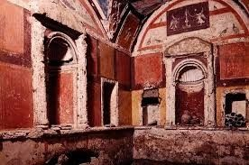
Sob as Grutas Vaticanas estende-se uma rua funerária romana dos séculos I a IV, soterrada quando Constantino nivelou a colina para erguer a primeira basílica. As escavações iniciadas em 1939, por iniciativa de Pio XII, revelaram mausoléus pagãos e cristãos e, sob o altar papal, o chamado 'troféu de Gaio' e a área identificada como o túmulo de Pedro. É uma visita íntima, em grupos minúsculos, que dá sentido histórico a toda a basílica acima. Poucos lugares em Roma condensam tão bem a passagem do mundo pagão ao cristão.
O mosaico do Cristo-Sol (Cristo como Hélio) no mausoléu dos Júlios e o Muro Vermelho com o 'graffiti wall', onde se encontram as relíquias atribuídas a Pedro.
Nenhum conflito de data (segunda-feira útil). Detalhe a observar: as fontes não oficiais divergem sobre a duração (1h a 1h30) — a saída pode ocorrer depois das 13h15, o que afeta o encaixe da visita à basílica às 14h só de forma favorável (o tour termina dentro das Grutas, com acesso à basílica).
Ufficio Scavi, Fabbrica di San Pietro — acesso pelo lado esquerdo (sul) da Praça de São Pedro, além da colunata, no portão vigiado pela Guarda Suíça (Arco delle Campane / entrada do Sant'Uffizio)
Seg 21/12, tour às 12h15 (duração cerca de 1h a 1h30). O escritório funciona de segunda a sábado; os tours ocorrem aproximadamente entre 9h e 16h15.
Já adquirido. (Referência: cerca de 13 € por pessoa nas fontes consultadas; uma fonte cita 20 € — valor oficial não confirmado, pois scavi.va não pôde ser acessado.)
Chegar ao portão da Guarda Suíça, à esquerda da basílica, 20–30 minutos antes (as fontes pedem no mínimo 10–15 min; atrasados não entram e não há reembolso). Levar a confirmação impressa ou no celular e passaporte. O acesso tem controle de segurança próprio — não é preciso enfrentar a fila geral da basílica. Ombros e joelhos cobertos; sem mochilas grandes; fotos proibidas. Idade mínima: 15 anos (sem problema para o grupo de seis adultos). O ar lá embaixo é quente e úmido: casaco na mão.
Confirmado Scavi — Necrópole Vaticana — Chegar 20 a 30 min antes.
Necrópole Vaticana: a história do túmulo de Pedro
Na época romana, o Vaticano ficava fora da cidade, do outro lado do Tibre: uma colina de argila e uma planície úmida, com jardins imperiais. Ali Calígula começou a construir um circo, uma pista de corridas, terminado por Nero. O obelisco que hoje está no centro da praça decorava o meio dessa pista.
Ao lado do circo, numa encosta da colina, passava uma estrada. Os romanos enterravam os mortos fora da cidade, ao longo das estradas, e por isso a encosta foi se enchendo de túmulos: uma necrópole, ou "cidade dos mortos". Nos séculos II e III, famílias ricas construíram ali mausoléus de tijolo, enfileirados como casinhas numa rua, com pinturas, mosaicos e estuques por dentro.
Depois do grande incêndio de 64, Nero culpou os cristãos. O historiador Tácito conta que muitos foram mortos nos jardins de Nero, e que alguns foram usados como tochas humanas para iluminar a noite.
Segundo a tradição, o apóstolo Pedro foi crucificado nessa perseguição, entre 64 e 67, no circo de Nero ou junto dele, de cabeça para baixo, por não se considerar digno de morrer como Jesus. O lugar fica um pouco ao sul da basílica atual. Uma placa no chão, à esquerda da basílica, na Piazza dei Protomartiri Romani, marca onde o obelisco estava naquela época: ele foi a última coisa que Pedro viu.
Os cristãos recolheram o corpo e o enterraram ali perto, numa cova simples na terra da encosta, ao lado da estrada e da necrópole pagã. Era um túmulo pobre, sem monumento. Em volta dele, ao longo dos anos, outros cristãos pediram para ser enterrados, o que mostra que o lugar era conhecido e venerado desde o início.
Por volta de 160, quando um muro rebocado de vermelho foi construído naquele terreno (o chamado Muro Vermelho), os cristãos ergueram encostado a ele um pequeno monumento sobre o túmulo: um nicho com duas colunas e uma laje, como um pequeno altar. Por volta de 200, um padre romano chamado Gaio escreveu: "Posso mostrar-te os troféus dos apóstolos: se fores ao Vaticano ou à Via Ostiense, encontrarás os troféus dos que fundaram esta Igreja". Troféu, aqui, quer dizer o monumento da vitória do mártir. Esse pequeno nicho foi encontrado nas escavações, exatamente debaixo do altar papal.
No século III, um murinho de apoio ao lado do troféu ficou coberto de inscrições riscadas por fiéis, com o nome de Pedro, o monograma de Cristo e pedidos pelos mortos. Num fragmento ao lado, a arqueóloga Margherita Guarducci leu "Petros eni", em grego: "Pedro está aqui".
Dentro de um nicho desse muro foram achados ossos de um homem idoso e robusto, envoltos em restos de tecido de púrpura e ouro. Em 1968, o papa Paulo VI anunciou que as relíquias de Pedro tinham sido identificadas de um modo "que podemos considerar convincente". Os estudiosos ainda debatem a identificação, mas a continuidade do culto no mesmo ponto, desde o século II, é um dado arqueológico sólido.
Por volta de 320, o imperador Constantino, o primeiro a apoiar o cristianismo, decidiu construir uma grande basílica sobre o túmulo. Era um trabalho enorme: foi preciso cortar a encosta de um lado e aterrar o outro. Os mausoléus foram destelhados e enchidos de terra, e a necrópole inteira ficou soterrada. Foi isso que a conservou até hoje. A basílica foi centrada exatamente sobre o troféu, que ficou encerrado num monumento de mármore.
Desde então, peregrinos de toda a Europa passaram a vir rezar no túmulo de Pedro. Em volta da basílica nasceram hospedarias e albergues, que deram origem ao Borgo. Em 1300, o papa Bonifácio VIII proclamou o primeiro Ano Santo, o Jubileu, e Roma recebeu multidões de todo o continente.
Cada nova época construiu um altar em cima do anterior, sempre na mesma vertical: o de Gregório Magno, por volta de 600; o de Calisto II, em 1123; e o atual altar papal, de Clemente VIII, em 1594. Entre 1506 e 1626 a velha basílica foi substituída pela atual, e Bernini cobriu o altar com o baldaquino de bronze. A cúpula de Michelangelo fica exatamente sobre o túmulo.
Em 1939, ao preparar a sepultura de Pio XI nas grutas, os operários acharam os mausoléus. Pio XII autorizou escavações secretas, feitas entre 1940 e 1949, que revelaram a rua dos túmulos que vocês vão percorrer.
O percurso segue a antiga rua da necrópole, entre fachadas de mausoléus com inscrições, pinturas e estuques. No mausoléu dos Júlios (chamado Mausoléu M), procurem o mosaico de Cristo como o deus Sol, guiando um carro com cavalos brancos: uma das imagens cristãs mais antigas que se conhecem. No fim, junto ao Muro Vermelho, vocês ficam a poucos metros, debaixo do altar papal, do lugar onde tudo começou.
‹ Voltar a Necrópole VaticanaBasílica de São Pedro
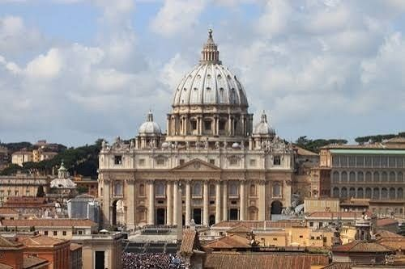
Erguida sobre o local onde a tradição situa o túmulo do apóstolo Pedro, a basílica atual substituiu a igreja constantiniana do século IV e levou mais de um século para ser concluída, entre 1506 e 1626. Por seu canteiro passaram Bramante, Rafael, Michelangelo — autor do projeto da cúpula — e Bernini, que lhe deu o baldaquino e a teatralidade barroca. Em 2026 celebra-se o quarto centenário de sua dedicação, o que torna a visita deste ano especialmente simbólica. É o coração litúrgico do catolicismo e, ao mesmo tempo, uma das maiores obras-primas da arquitetura ocidental.
A Pietà de Michelangelo (logo à direita da entrada), o baldaquino de bronze de Bernini sob a cúpula e a Cátedra de Pedro na abside; para quem tiver fôlego, a subida à cúpula oferece a vista mais célebre de Roma.
25/12 de manhã: a basílica fica reservada à liturgia papal (missa às 10h em 2025, com ingresso) e a praça é fechada por segurança a partir de cedo; não planejar visita turística ao interior nesse dia. 24/12: fechamento antecipado para a missa da noite. Horários de inverno variam entre fontes (18h30 a 19h10) — reconfirmar no site oficial.
Piazza San Pietro, 00120 Cidade do Vaticano
Seg 21/12, 14h–16h: dentro do horário regular (abertura às 7h; no período outubro–março o fechamento é indicado entre 18h30 e 19h10 conforme a fonte — não confirmado no site oficial, que não pôde ser acessado). Cúpula: aprox. 7h30/8h–17h no inverno, último acesso cerca de 45 min antes. 25/12 de manhã: a missa papal de Natal (em 2025 foi às 10h, dentro da basílica) e a bênção Urbi et Orbi ao meio-dia praticamente inviabilizam a visita turística; o horário de 2026 ainda não foi publicado.
Entrada gratuita na nave. Há ingresso opcional pago com horário marcado e audioguia digital (venda oficial em basilicasanpietro.va); a cúpula é paga (valor variável conforme elevador ou escada — preço atual não confirmado, verificar no site oficial).
A fila de segurança, sob a colunata direita, é obrigatória e pode passar de uma hora; quem sai do tour dos Scavi às 13h15 termina nas Grutas Vaticanas e, em geral, sobe diretamente para a basílica sem refazer a fila — vale encadear as duas visitas. Ombros e joelhos cobertos, mesmo sob o casaco.
A confirmar Basílica de São Pedro com guia ou audioguia
Castel Sant'Angelo
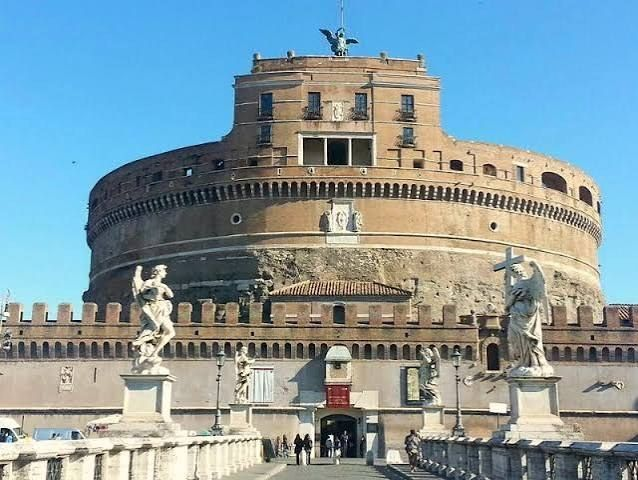
Construído por Adriano como mausoléu para si e sua família, por volta de 130 d.C., o cilindro de pedra virou fortaleza no fim da Antiguidade e, na Idade Média, refúgio dos papas, ligado ao Vaticano por um corredor elevado, o Passetto di Borgo. O nome vem da visão de um anjo embainhando a espada no alto do edifício, ao fim da peste de 590, segundo a tradição.
A rampa helicoidal romana, os apartamentos papais renascentistas e o terraço do anjo, com uma das vistas mais bonitas de São Pedro e do Tibre.
Lungotevere Castello, 50, 00193 Roma
Terça a domingo, 9:00–19:30 (última entrada 18:30). Fechado às segundas, em 1º/1 e em 25/12. Em 21/12 (segunda), só vista externa; em 23/12 (quarta), aberto.
Inteira € 18; reduzida € 2; gratuito até 18 anos.
Suba direto ao terraço e desça visitando as salas com calma; a vista do fim de tarde é a melhor.
A comprar Castel Sant'Angelo — € 18; audioguia.
Castel Sant'Angelo: a história
No início dos anos 130, o imperador Adriano, o mesmo que reconstruiu o Panteão, começou a construir um mausoléu para si e para a sua família. Os túmulos imperiais anteriores, como o de Augusto, estavam cheios, e ele escolheu um terreno do outro lado do Tibre, nos jardins imperiais do Vaticano. Adriano morreu em 138, e a obra foi terminada no ano seguinte por seu sucessor, Antonino Pio.
Era um enorme cilindro de 64 metros de diâmetro sobre uma base quadrada, todo revestido de mármore branco e decorado com estátuas. No alto havia um jardim de árvores e, no topo, provavelmente uma estátua do imperador num carro puxado por cavalos. Por dentro, uma rampa em espiral, que vocês ainda vão percorrer, subia até a câmara central, onde ficavam as urnas com as cinzas. Ali foram depositados Adriano, sua esposa Sabina e os imperadores seguintes, até Caracala, em 217.
No fim do século III, as muralhas de Aureliano chegaram até o mausoléu, e por volta de 400 o imperador Honório o transformou num bastião de defesa da ponte. Em 537, durante o cerco dos godos, os defensores arrancaram as estátuas de mármore e as atiraram sobre os atacantes, conta o historiador Procópio. As urnas foram saqueadas e as cinzas dos imperadores, espalhadas.
Em 590, Roma era devastada pela peste. O papa Gregório Magno organizou uma grande procissão de penitência e, ao passar pela ponte, teria visto no alto do mausoléu o arcanjo Miguel guardando a espada na bainha: sinal de que a peste tinha acabado. Desde então o edifício se chama Castelo do Santo Anjo, e um anjo foi colocado no topo.
Na Idade Média, quem controlasse o castelo controlava a passagem para o Vaticano, e as famílias nobres de Roma disputaram a fortaleza por séculos. Os papas acabaram ficando com ela. No século XIII, o papa Nicolau III completou o Passetto di Borgo, um corredor protegido sobre a muralha, com cerca de 800 metros, que liga o Vaticano ao castelo. Vocês o veem do Borgo Pio.
O Passetto salvou um papa. Em 6 de maio de 1527, as tropas do imperador Carlos V invadiram Roma, no terrível Saque de Roma. O papa Clemente VII fugiu pelo corredor até o castelo, enquanto 147 guardas suíços morriam cobrindo a sua fuga, nos degraus de São Pedro. É por isso que os novos guardas suíços prestam juramento todo dia 6 de maio. O papa ficou sitiado no castelo por meses.
Depois disso, os papas transformaram o alto do castelo em apartamentos de luxo: a Sala Paolina, decorada para Paulo III com afrescos de Perin del Vaga, é a mais bonita. Ao mesmo tempo, os porões serviam de prisão. Ali estiveram presos o ourives Benvenuto Cellini, que fugiu descendo pelas muralhas com lençóis amarrados, Beatrice Cenci e o aventureiro Cagliostro. É também no terraço do castelo que se passa o último ato da ópera Tosca, de Puccini, quando a heroína se atira das muralhas.
O anjo de bronze que coroa o castelo é de 1753, obra do escultor flamengo Peter Anton von Verschaffelt. O anjo anterior, de mármore com asas de bronze, feito por Raffaello da Montelupo em 1544, está hoje num dos pátios internos: procurem por ele na subida.
O castelo deixou de ser quartel e prisão no fim do século XIX, foi restaurado e virou museu em 1925. A visita sobe da rampa romana até o terraço do anjo, passando pelas camadas da história: túmulo imperial, fortaleza medieval, apartamentos renascentistas e prisão.
‹ Voltar a Castel Sant'AngeloA Ponte Sant'Angelo e seus anjos
A ponte faz parte do conjunto desde o início: Adriano a construiu em 134 para chegar ao seu mausoléu, e ela se chamava Pons Aelius, por causa do nome de família do imperador, Élio. Os três arcos centrais são ainda os romanos, com quase 1.900 anos. Os dois arcos das pontas foram refeitos no fim do século XIX, quando o Tibre ganhou os muros altos de proteção contra as enchentes.
Durante a Idade Média, era o caminho obrigatório dos peregrinos para São Pedro. No Jubileu de 1450, a multidão era tanta que houve um tumulto na ponte e cerca de duzentas pessoas morreram, esmagadas ou afogadas. Depois disso, o papa Nicolau V mandou alargar a passagem e limpar a entrada.
Em 1534, o papa Clemente VII colocou na entrada da ponte as estátuas de São Pedro e São Paulo. Mais de um século depois, em 1667, o papa Clemente IX encomendou a Bernini uma decoração completa: dez anjos, cada um segurando um instrumento da Paixão de Cristo. São a coroa de espinhos, os pregos, a cruz, a lança, o sudário, a esponja, os dados, as vestes, o chicote e a inscrição INRI. A ideia era transformar a travessia numa via-sacra para os peregrinos: o caminho até São Pedro passava a ser uma meditação sobre o sofrimento de Cristo.
Bernini, já com quase 70 anos, desenhou todos os anjos, mas a execução ficou com os seus discípulos. Ele mesmo esculpiu dois, o da coroa de espinhos e o da inscrição. O papa os achou belos demais para ficarem expostos à chuva, e eles hoje estão na igreja de Sant'Andrea delle Fratte, perto da Piazza di Spagna. Na ponte estão cópias.
Atravessem a ponte devagar e leiam a inscrição em latim na base de cada anjo, que traz um versículo da Bíblia ligado ao objeto que ele segura. Do meio da ponte, olhem para o castelo com o anjo de bronze no topo e, para o outro lado, rio abaixo, para a cúpula de São Pedro. É uma das vistas mais bonitas de Roma, sobretudo ao entardecer.
‹ Voltar a Castel Sant'AngeloPiazza Adriana e jardins do Castel Sant'Angelo
Ver fotos ›Os jardins que cercam o mausoléu de Adriano receberam, em dezembro de 2025, uma vila natalina com pista de patinação de cerca de 1.250 m², barracas de madeira com comida e bebida e presépio napolitano. A estrutura, porém, não foi um mercado de Natal municipal: fazia parte da Atreju, festa política anual, e ficou aberta ao público apenas até 14/12/2025 (a ocupação dos jardins terminou em 22/12). Em anos anteriores (2023) o mesmo evento também montou pista e barracas ali. Não há, portanto, uma tradição consolidada de mercado natalino em Piazza Adriana durante o período das festas.
Se houver montagem em 2026, a patinação aos pés do castelo, com a cúpula de São Pedro ao fundo, é uma cena memorável; como alternativa garantida, a pista Ice Park da Piazza Cavour fica a poucos minutos do hotel.
Provável conflito: em 2025 a vila de Castel Sant'Angelo estava encerrada antes de 20/12; não há confirmação de qualquer mercado ou pista em Piazza Adriana entre 20 e 28/12/2026. Não incluir no roteiro como certo.
Piazza Adriana / jardins e fossos do Castel Sant'Angelo, Lungotevere Castello, 00193 Roma (Prati)
Não confirmado para 2026. Em 2025 a vila funcionou apenas até 14/12. Alternativa: Ice Park Piazza Cavour — em 2025/26 abriu diariamente das 10h às 24h, até 6/1 (edição 2026 ainda não anunciada).
Em 2025: entrada livre na vila; patinação a 10 € por 60 minutos. Ice Park Piazza Cavour (2025): 10 € com patins e 1 hora de pista.
Na semana anterior à viagem, consultar turismoroma.it ou ligar para o 06 0608 (central de turismo de Roma) para saber se haverá vila em 2026; a Piazza Cavour é a aposta mais segura para quem quiser patinar.
Borgo Pio e o rione Borgo
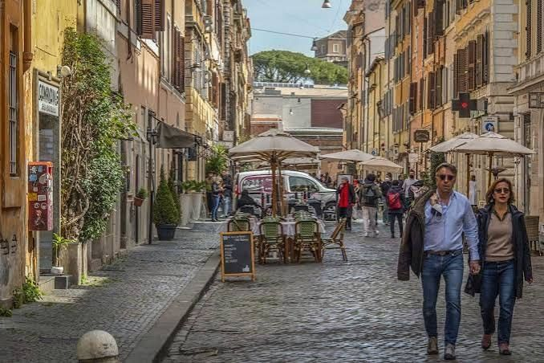
O Borgo nasceu como antessala de São Pedro: ali se instalaram, desde a Alta Idade Média, as hospedarias de peregrinos, entre elas o complexo de Santo Spirito in Sassia, fundado por volta de 727. Sisto V o transformou no 14º rione de Roma em 1586. A demolição da 'Spina di Borgo' entre 1935 e 1937, para abrir a Via della Conciliazione, apagou o labirinto de vielas de onde a colunata de Bernini surgia de surpresa — e o Borgo Pio, hoje quase todo para pedestres, é o melhor testemunho do que restou desse tecido antigo. Corre paralelo ao Passetto, o corredor elevado por onde os papas fugiam para o castelo.
O disco de pedra na esquina com Via del Campanile, que fixava o tamanho obrigatório do pão para coibir padeiros desonestos em tempos de fome; a vista do Passetto de Borgo sobre os telhados.
Borgo Pio, 00193 Roma (entre a Piazza San Pietro e o Castel Sant'Angelo)
Rua pública, acesso livre a qualquer hora; lojas e cafés com horários próprios.
Gratuito.
Cuidado com os restaurantes de isca turística com garçons na porta; preferir endereços consolidados (como os dois do grupo) e o café de bairro. Lojas de artigos religiosos ao longo da rua oferecem objetos que podem ser abençoados pelo papa.
O Borgo: a história do bairro
Na Roma antiga, toda esta área era o Ager Vaticanus, o campo vaticano: fora da cidade, do outro lado do Tibre, ocupada pelos jardins de Agripina e de outros membros da família imperial. Havia ali o circo de Calígula e Nero, estradas ladeadas de túmulos e, a partir de 139, o grande mausoléu de Adriano, hoje Castel Sant'Angelo. Ninguém morava aqui de forma permanente.
Tudo mudou quando Constantino construiu a basílica sobre o túmulo de Pedro, por volta de 320. Os peregrinos começaram a chegar de toda a Europa, e em volta deles foi nascendo uma pequena cidade de serviços: hospedarias, igrejas, cemitérios, lojas e estábulos.
No século VIII, cada povo cristão do norte tinha aqui a sua "escola", uma espécie de colônia com igreja, albergue e cemitério para os seus peregrinos: saxões, francos, frísios e lombardos. A mais famosa foi a dos saxões da Inglaterra, fundada por volta de 727 pelo rei Ine de Wessex. É dela que vem o nome do hospital e da igreja de Santo Spirito in Sassia, onde "Sassia" quer dizer saxões.
Os saxões chamavam o povoado de "burgh", palavra germânica para lugar fortificado. Dali veio "Borgo", nome que o bairro mantém até hoje.
Em 846, piratas sarracenos subiram o Tibre e saquearam a basílica de São Pedro, que ficava fora das muralhas. Em resposta, o papa Leão IV cercou a área com muralhas entre 848 e 852. Nasceu a Cidade Leonina, uma cidade à parte, com governo próprio, separada de Roma pelo rio. Só em 1586 o papa Sisto V a incorporou à cidade como o 14º bairro, o rione Borgo.
No Renascimento, os papas abriram ruas novas para os Jubileus. O Borgo Pio leva o nome do papa Pio IV, que em meados do século XVI ampliou o bairro para o norte e o protegeu com novas muralhas.
O Borgo sempre viveu do Vaticano. Moravam aqui donos de estalagens e tabernas, comerciantes de objetos religiosos, artesãos, funcionários da corte papal, soldados e guardas. Também havia cardeais e embaixadores, que construíram palácios ao longo das ruas principais, como o Palazzo dei Penitenzieri e o Palazzo Torlonia. E, inevitavelmente, numa terra de forasteiros, também ladrões, vigaristas e prostitutas.
O disco de pedra na esquina com a Via del Campanile lembra uma preocupação bem prática: ele fixava o tamanho mínimo do pão, para que os padeiros não enganassem os peregrinos.
Até os anos 1930, o caminho até São Pedro era um labirinto de vielas, e quem saía delas tinha a surpresa de dar de cara, de repente, com a praça e as colunatas de Bernini. O quarteirão central que separava as duas ruas principais se chamava a Spina di Borgo. Para celebrar o acordo de 1929 entre a Itália e o Vaticano, Mussolini mandou demoli-lo e abrir a larga Via della Conciliazione, concluída em 1950.
O Borgo Pio, paralelo ao Passetto e quase todo para pedestres, é o melhor pedaço que restou do bairro antigo. Hoje ele é residencial, cheio de trattorias, cafés e lojas de artigos religiosos, e mora ali muita gente que trabalha no Vaticano. O quartel da Guarda Suíça fica logo no fim da rua, junto à Porta Sant'Anna.
‹ Voltar a Borgo PioColiseu
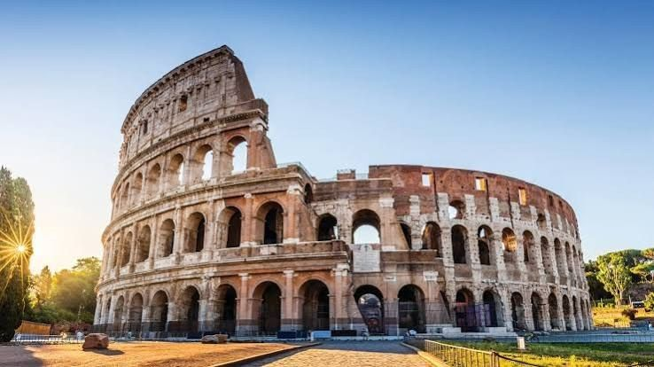
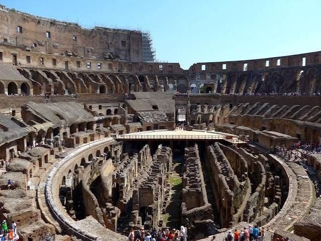
Inaugurado em 80 d.C. pelo imperador Tito, o Anfiteatro Flávio abrigava dezenas de milhares de espectadores para combates de gladiadores e caçadas a feras, e tornou-se o símbolo absoluto do poder e do espetáculo romanos. Pisar a arena reconstruída permite ver o monumento do ponto de vista de quem lutava, com as arquibancadas erguendo-se ao redor. A visita guiada ajuda a ler a engenharia dos acessos, dos subterrâneos e do sistema de hierarquia social na distribuição dos lugares.
A vista da arena para a cávea e, do segundo anel, a perspectiva sobre o Arco de Constantino e a Via Sacra.
O site do produto Full Experience Arena menciona 'último acesso 18h' / 'última entrada 15h' em versões diferentes — irrelevante para a visita das 10h, mas com o horário de inverno (última entrada 15h30) não há margem para remarcar à tarde.
Piazza del Colosseo, 00184 Roma
Terça 22/12: aberto. Horário de 25/10/2026 a 28/2/2027: Coliseu 8h30–16h30, última entrada 15h30 (Fórum/Palatino abrem às 9h). Fechado em 25/12/2026 e 1/1/2027. Permanência no Coliseu limitada a 90 minutos pelo regulamento.
Full Experience Arena: € 24 inteira (€ 2 para cidadãos da UE de 18 a 24 anos); válido por 2 dias consecutivos; inclui Coliseu com arena (horário marcado), Fórum Romano, Palatino e sítios SUPER. Alternativa: 'Only Arena' (24 h, 20 min na arena). Bilhetes nominais: documento de identidade (passaporte) visível na entrada; troca de nome só uma vez, até a meia-noite do 7º dia antes da visita e por motivos restritos. Vendas abrem 30 dias antes (a partir de ~22/11 para 22/12), em ticketing.colosseo.it. Guias credenciados reservam pelo próprio canal.
Se contratarem guia particular, confirmem se ele compra os bilhetes nominais dos seis (com os nomes exatos dos passaportes) ou se vocês devem comprar; estejam na fila de segurança 20–30 min antes das 10h.
A confirmar Coliseu com Arena, Fórum e Palatino — Ingresso nominal: levar documento.
Fórum Romano e Monte Palatino
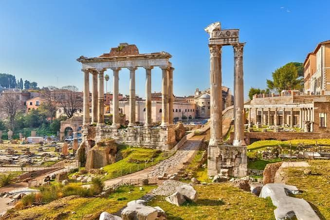
Antigo pântano drenado no fim do século VII a.C., o vale do Fórum foi por mais de mil anos o centro político, religioso e comercial de Roma, acumulando basílicas, templos e arcos triunfais como o de Septímio Severo (203 d.C.); a Coluna de Focas, de 608, foi o último monumento ali erguido. Acima, o Palatino guarda vestígios das cabanas da Idade do Ferro ligadas à fundação da cidade, a casa de Augusto e os grandes palácios imperiais — a Domus Flavia e a Domus Augustana de Domiciano. A palavra 'palácio' nasce justamente de Palatium.
O Arco de Septímio Severo, a Cúria Júlia, a Basílica de Maxêncio e, no Palatino, os mirantes sobre o Fórum e o Circo Máximo; a Casa de Augusto (fechada às segundas — aberta na terça 22/12).
A Casa de Lívia consta como fechada para restauração e o Templo de Rômulo como temporariamente fechado — verificar antes da visita.
Entradas: Via della Salara Vecchia 5/6 (Largo della Salara Vecchia), Via Sacra (Arco de Tito) e Via di San Gregorio 30, Roma
Terça 22/12: Fórum/Palatino a partir das 9h; fechamento no horário de inverno às 16h30 (última entrada 15h30), conforme o Parque do Coliseu.
Incluído no Full Experience Arena (válido 2 dias consecutivos — o Fórum/Palatino pode ser visto em 22 ou 23/12). Atenção: entrada única no Fórum/Palatino; saiu, não volta com o mesmo bilhete.
Planejem a saída pelo lado do Capitólio (Via della Salara Vecchia/Via Sacra) para emendar direto com o Cárcere Mamertino, a poucos minutos a pé.
Cárcere Mamertino
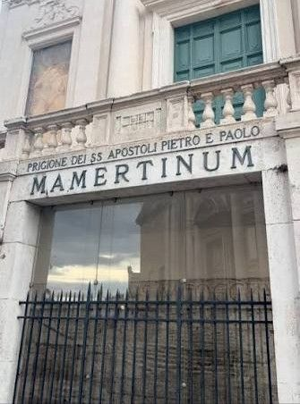
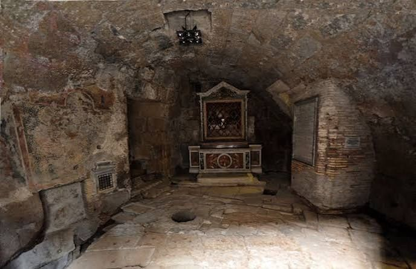
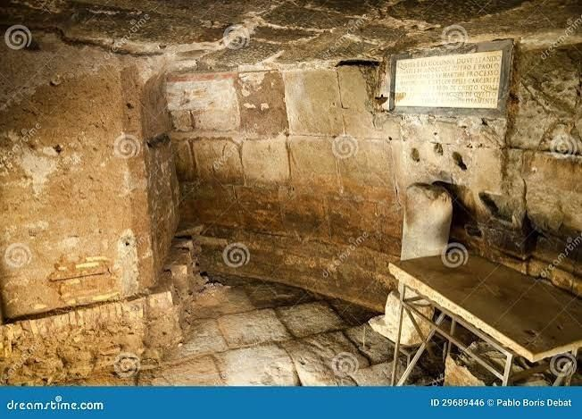
Prisão de segurança máxima da Roma antiga, onde os inimigos do Estado aguardavam a execução, tem dois níveis: o Carcer, superior, datado pelos arqueólogos do século VI a.C., e o Tullianum, a cela subterrânea. Ali morreram Jugurta, rei da Numídia (104 a.C.), e Vercingetórix, chefe dos gauleses (46 a.C.). A tradição cristã afirma que os apóstolos Pedro e Paulo foram mantidos ali pouco antes do martírio, o que transformou o lugar em santuário.
A descida ao Tullianum e a coluna à qual, segundo a tradição, São Pedro teria sido acorrentado; o percurso inclui material multimídia sobre as escavações.
A ficha oficial mostra a bilheteria como 'fechada' todos os dias, em contradição com o horário de abertura — confirmar preço e funcionamento com a Opera Romana Pellegrinaggi antes da viagem.
Clivo Argentario, 1 (Via del Clivio Argentario), 00186 Roma — sob a igreja de San Giuseppe dei Falegnami, junto ao Fórum
Terça 22/12: todos os dias 9h–17h (última entrada 16h segundo fonte não oficial); fechado em 25/12 e 1/1. A visita das 14h20 cabe no horário.
€ 10 inteira / € 5 reduzida (ficha do Ministério da Cultura). Reserva facultativa via Omnia Vatican Rome (Opera Romana Pellegrinaggi), tel. +39 06 69896 379 ou romacristiana@orpnet.org. Não está incluído no bilhete do Coliseu.
A visita dura cerca de 30–40 minutos e os espaços são estreitos e úmidos, com escadas — melhor reservar o horário para os seis entrarem juntos.
A comprar Carcere Mamertino
Cárcere Mamertino: a história
É um dos lugares mais antigos de Roma. O historiador Tito Lívio conta que o quarto rei de Roma, Anco Márcio, no século VII a.C., construiu um cárcere "no meio da cidade, sobre o Fórum", para conter o aumento da criminalidade. A cela de baixo, o Tullianum, foi atribuída por outros autores a Sérvio Túlio, o sexto rei, por causa do nome. Mas o nome deve vir de "tullius", uma palavra antiga para nascente: há uma fonte de água no fundo da cela.
As escavações recentes mostram que o Tullianum começou como uma cisterna ou um santuário ligado a essa nascente, e só depois virou prisão. A cela de cima, o Carcer, foi construída mais tarde com grandes blocos de tufo. Na fachada ainda se lê a inscrição de uma restauração feita no ano 22 d.C.
Os romanos não usavam a prisão como pena. O cárcere servia para manter os presos por pouco tempo, até o julgamento ou, sobretudo, até a execução. Os inimigos do Estado eram trazidos para cá depois de desfilar no triunfo do general vencedor e, muitas vezes, estrangulados no Tullianum. Os corpos eram jogados na Escadaria Gemônia, que descia para o Fórum.
O historiador Salústio descreveu a cela no século I a.C.: um buraco a uns doze pés abaixo do chão, cercado de muros e coberto por uma abóbada de pedra, "repugnante e assustador pelo abandono, pela escuridão e pelo cheiro". Originalmente, só se entrava por um buraco no teto.
Jugurta, rei da Numídia, morreu de fome em 104 a.C. Os cúmplices da conspiração de Catilina foram estrangulados aqui em 63 a.C.: ao sair, Cícero anunciou ao povo apenas "vixerunt", "eles viveram". Vercingetórix, o chefe dos gauleses vencido por César, foi executado em 46 a.C., depois do triunfo. E Simão bar Giora, líder da revolta judaica, morreu em 71 d.C., depois do triunfo de Tito.
Segundo uma tradição cristã muito antiga, registrada nos relatos do martírio dos santos Processo e Martiniano, o apóstolo Pedro ficou preso aqui pouco antes de morrer, durante a perseguição de Nero. Na cela, ele teria convertido os seus dois carcereiros, Processo e Martiniano, e outros 47 presos. Para batizá-los, fez brotar milagrosamente uma fonte de água do chão. Vocês verão a coluna à qual Pedro teria sido acorrentado e a fonte, que é na verdade a nascente antiga do Tullianum. Na escada, uma marca na parede seria a cabeça de Pedro batendo na pedra.
A tradição coloca aqui também o apóstolo Paulo, preso em Roma antes de ser decapitado. A ele se atribui a Segunda Carta a Timóteo, considerada a sua última carta, escrita na prisão em Roma, sentindo a morte próxima. Nela estão algumas das frases mais famosas do Novo Testamento: "Combati o bom combate, terminei a corrida, guardei a fé". E também um pedido bem humano: que Timóteo viesse logo, antes do inverno, e trouxesse a capa que ele tinha deixado em Trôade.
Os historiadores lembram que não há prova arqueológica de que os dois tenham estado justamente nesta cela. Mas a devoção existe há pelo menos 1.500 anos.
O cárcere funcionou até o fim do Império, no século IV. Depois, por causa da tradição de Pedro, foi transformado em capela, conhecida como San Pietro in Carcere. O nome "Mamertino" só aparece na Idade Média e talvez venha de um templo ou estátua de Marte, chamado Mamers, que existia ali perto. Em 1597 os carpinteiros de Roma construíram em cima a igreja de San Giuseppe dei Falegnami, que vocês veem por fora. Uma placa na entrada lista os nomes dos presos ilustres que passaram por aqui.
‹ Voltar a Cárcere MamertinoPiazza Venezia e o Vittoriano
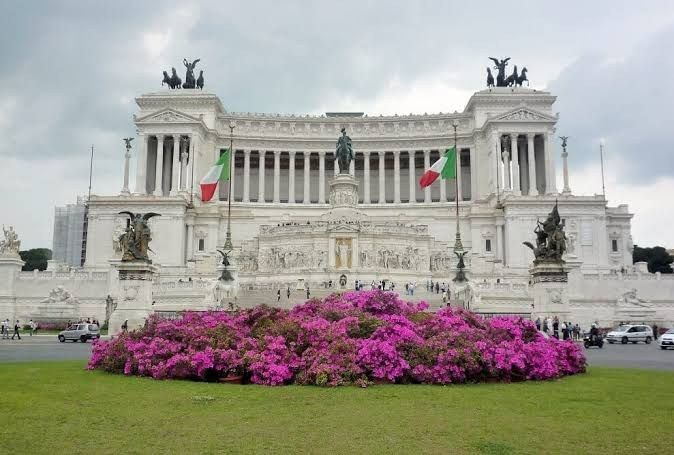
A praça tomou a forma atual na virada do século XIX para o XX, quando o bairro foi aberto para receber o monumento a Vítor Emanuel II, primeiro rei da Itália unificada. Projetado por Giuseppe Sacconi, o Vittoriano começou a ser erguido em 1885 e foi inaugurado em 1911; desde 1921 abriga o Túmulo do Soldado Desconhecido, vigiado dia e noite por guarda de honra. Do lado oposto, o Palazzo Venezia, do século XV, foi embaixada de Veneza e, entre 1929 e 1943, sede do governo de Mussolini, que discursava de sua varanda.
À noite, o mármore branco do Vittoriano iluminado; de dia, a troca da guarda no Altar da Pátria e a vista para a Via dei Fori Imperiali.
Desde 18/10/2023 a praça abriga o canteiro da estação Venezia do Metrô C (previsão de conclusão bem posterior a 2026): tapumes e desvios de pedestres reduzem o espaço e afetam as fotos. Iluminação específica do Vittoriano em 26/12 não confirmada.
Piazza Venezia, 00186 Roma
Praça pública, acesso livre a qualquer hora (22/12 às 15h e 26/12 às 18h30). Os horários de visita interna e da Terrazza delle Quadrighe não foram verificados.
Praça e escadaria externa do Altar da Pátria: gratuitos. Áreas internas/terraço panorâmico: pagos (valores não verificados).
Para a foto noturna em 26/12, posicionem-se no início da Via del Corso, olhando para o monumento — o enquadramento evita os tapumes da obra.
Via del Corso
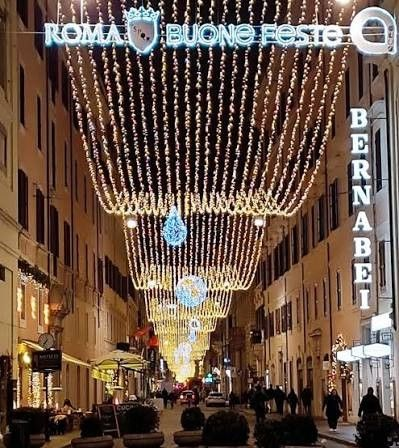
Herdeira da antiga Via Lata, prolongamento urbano da Via Flamínia, a Via del Corso corta em linha reta o centro histórico por cerca de 1,5 km, entre a Piazza del Popolo e a Piazza Venezia. Ganhou o nome das corridas de cavalos sem cavaleiro do Carnaval romano e hoje é a principal artéria comercial da cidade, ladeada por palácios nobres, igrejas e lojas de grandes marcas. As ruas transversais levam às grifes da Via Condotti e à Piazza Colonna, com a coluna de Marco Aurélio.
As luminárias natalinas (em 2025, mais de 1,8 km de luzes ao longo da rua) e as transversais Via dei Condotti e Via Frattina para compras de luxo.
As luminárias de 2026 ainda não foram anunciadas; referência é a edição 2025–26 (acesas em 8/12/2025).
Via del Corso, da Piazza del Popolo à Piazza Venezia, Roma
Via pública. Lojas costumam abrir por volta de 10h–20h; horário de 22/12 não verificado (véspera de Natal tende a ter horário estendido, sem confirmação).
Gratuito.
Em 22/12 a rua estará lotada de compras de última hora; combinem um ponto de encontro (Piazza Colonna) e deixem sacolas grandes para entrega no hotel ou para o fim do dia.
Museus Vaticanos e Capela Sistina
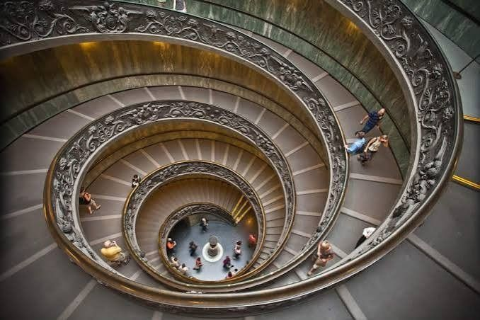
Fundados por Júlio II no início do século XVI a partir de um pátio de esculturas antigas, os Museus Vaticanos reúnem hoje uma das maiores coleções de arte do mundo, distribuída por cerca de sete quilômetros de galerias. O percurso culmina na Capela Sistina, onde Michelangelo pintou a abóbada (1508–1512) e, décadas depois, o Juízo Final. Em 2026 os museus anunciaram a conclusão de uma manutenção extraordinária do Juízo Final, o que permite vê-lo em ótimas condições. Visitar com tempo, logo na abertura, é o privilégio de ver a Sistina antes da multidão.
Laocoonte e Apolo do Belvedere no Pio-Clementino, a Galeria dos Mapas, as Salas de Rafael (com a Escola de Atenas) e, naturalmente, a Sistina; se sobrar fôlego, a Pinacoteca (Caravaggio, Leonardo).
Nenhum conflito para 23/12 (quarta-feira: a audiência geral de dezembro não afeta os museus). Apenas lembrar que 25 e 26/12 estão fechados, caso alguém pense em revisitar.
Viale Vaticano, 00165 Roma (entrada pelos Musei Vaticani)
Qua 23/12: data não listada como fechamento; horário regular de segunda a sábado é 8h–20h, último ingresso às 18h, salas esvaziadas 30 min antes do fechamento. Fechados 25 e 26/12. Em 24/12 há indicação (não oficial) de fechamento antecipado ao meio-dia/13h. O calendário oficial de fechamentos 2026–2027 (PDF no site) não pôde ser aberto — reconfirmar.
Já adquirido (entrada às 8h). Último domingo do mês (27/12/2026) teria entrada gratuita das 9h às 14h pela regra geral, mas a regra exclui o domingo que coincide com 25, 26 ou 31/12 — 27/12 não está excluído (cálculo próprio, não confirmado).
Chegar à fila dos ingressos reservados às 7h40, com a confirmação à mão. Muitos visitantes correm direto para a Sistina; quem tiver flexibilidade pode fazer o caminho inverso nas primeiras horas, mas o percurso tem sentido único — vale planejar com o guia. Na Sistina, silêncio e proibição de fotos; ombros e joelhos cobertos.
Confirmado Museus Vaticanos
A Capela Sistina
A Capela Sistina é a capela oficial do palácio do papa. Foi construída entre 1473 e 1481 para o papa Sisto IV della Rovere, e é dele que vem o nome. As medidas imitam as do Templo de Salomão descritas na Bíblia: cerca de 40 metros de comprimento, 13 de largura e 20 de altura. Por fora parece uma fortaleza simples de tijolos. Por dentro, tornou-se o lugar mais famoso da arte ocidental.
Até hoje ela é usada nas grandes cerimônias papais e no conclave: é aqui que os cardeais se trancam para eleger o novo papa, e da chaminé instalada no telhado sai a fumaça preta ou branca. Foi aqui que, em maio de 2025, foi eleito Leão XIV.
Antes de Michelangelo, Sisto IV chamou os melhores pintores da época: Perugino, Botticelli, Ghirlandaio, Cosimo Rosselli e Signorelli. Em poucos meses, entre 1481 e 1482, eles pintaram nas paredes laterais duas séries que dialogam entre si: a vida de Moisés, de um lado, e a vida de Cristo, do outro. A Lei antiga e a nova.
A mais famosa é a Entrega das Chaves a São Pedro, de Perugino, na parede da direita para quem olha o altar: uma grande praça em perspectiva, com Cristo entregando as chaves do céu a Pedro. Não deixem de olhar as paredes: muita gente passa direto por elas, de olhos grudados no teto.
Em 1508, o papa Júlio II, sobrinho de Sisto IV, encomendou a Michelangelo a pintura do teto. Michelangelo tinha 33 anos, era escultor, já famoso pelo Davi e pela Pietà, e não queria o trabalho. Dizia que pintura não era a sua arte. O plano inicial era modesto, só os doze apóstolos. Ele o transformou num programa com mais de 300 figuras.
A técnica é o afresco: os pigmentos são aplicados sobre o reboque ainda úmido, que, ao secar, prende a cor na parede. É preciso pintar rápido, um pedaço por dia, sem possibilidade de corrigir. Michelangelo projetou um andaime próprio, preso nas paredes a 20 metros de altura, e pintou em pé, com a cabeça inclinada para trás e o braço erguido. A história de que ele pintou deitado é um mito. Ele mesmo escreveu um poema bem-humorado reclamando do pescoço torto, da barba apontada para o céu e da tinta pingando no rosto. Teve ajudantes no começo, mas fez quase tudo sozinho.
No centro, nove cenas do livro do Gênesis: a criação do mundo, a história de Adão e Eva e a história de Noé. A mais famosa é a Criação de Adão, com os dois dedos quase se tocando. Em volta estão sete profetas de Israel e cinco sibilas, as profetisas do mundo pagão, sentados em tronos monumentais, além dos antepassados de Cristo e dos jovens nus, os ignudi. O teto foi inaugurado em 1º de novembro de 1512.
Mais de vinte anos depois, já com mais de 60 anos, Michelangelo voltou à capela para pintar toda a parede do altar com o Juízo Final, por encomenda de Clemente VII e de Paulo III. Roma ainda vivia o trauma do Saque de 1527, e o clima era outro: em vez da harmonia do teto, um turbilhão de quase 400 corpos que sobem ao céu ou caem no inferno, em volta de um Cristo jovem e sem barba, com o braço erguido.
São Bartolomeu, que foi esfolado vivo, segura a própria pele, e o rosto deformado dessa pele seria um autorretrato de Michelangelo. No canto inferior direito, o juiz do inferno, Minos, com orelhas de burro e uma serpente enrolada no corpo, tem o rosto de Biagio da Cesena, o mestre de cerimônias do papa que havia criticado os nus da pintura.
Os nus escandalizaram. Depois do Concílio de Trento, em 1564, o pintor Daniele da Volterra foi encarregado de cobrir as partes íntimas com panos, e ganhou o apelido de Braghettone, o "fazedor de calções".
Entre 1980 e 1994, uma grande restauração retirou séculos de fumaça de velas e camadas de cola, e revelou as cores vivas originais: rosas, verdes e laranjas que ninguém imaginava. Foi uma revelação, e também uma polêmica.
Vocês entram por uma porta lateral, perto da parede do altar. Andem até o fundo da capela, perto da grade de mármore, e olhem o teto na direção do altar, que é a ordem em que as cenas devem ser lidas. Procurem a Criação de Adão no meio, o profeta Jonas logo acima do Juízo Final e a Sibila de Delfos, uma jovem de olhos arregalados. Lembrem: é proibido fotografar e pede-se silêncio. É um lugar de oração.
‹ Voltar a Museus VaticanosTrastevere: Piazza Trilussa e Santa Maria in Trastevere
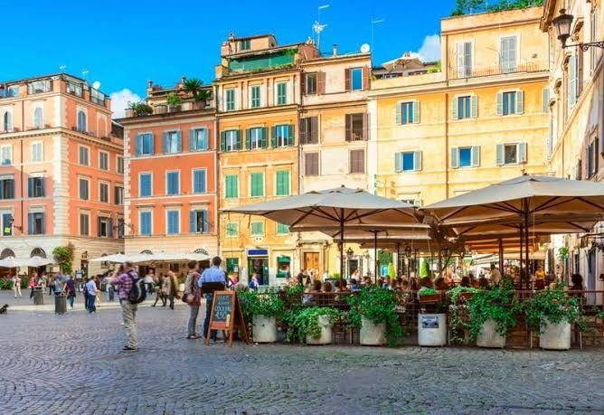
Do outro lado do Tibre, Trastevere preserva ruas de pedra, fachadas cor de ocre e uma vida noturna animada que começa na Piazza Trilussa, junto à Ponte Sisto. A basílica de Santa Maria in Trastevere é considerada provavelmente o primeiro local oficial de culto cristão de Roma — atribuída pela tradição ao papa Calisto I (século III) e concluída por Júlio I em 340, foi reconstruída sob Inocêncio II no século XII. Por dentro, 22 colunas antigas de granito sustentam a nave sob o teto de caixotões desenhado por Domenichino (1617).
Os mosaicos dourados da abside, do século XII, e as cenas da vida da Virgem de Pietro Cavallini (1291); na praça, a fonte e a fachada com mosaicos iluminada à noite.
Horário da basílica sem confirmação oficial; 23/12 é véspera da vigília de Natal e pode haver alterações por celebrações.
Piazza Trilussa e Piazza di Santa Maria in Trastevere, 00153 Roma
Quarta 23/12: horário oficial não publicado pelo Turismo Roma; o Museionline (não oficial) indica todos os dias 7h30–21h — às 17h deve estar aberta. Confirmar pelo tel. +39 06 5814802.
Gratuito.
Na antevéspera de Natal pode haver celebrações à tarde: entrem em silêncio e, se houver missa, admirem os mosaicos a partir do fundo da nave.
Mercato di Testaccio
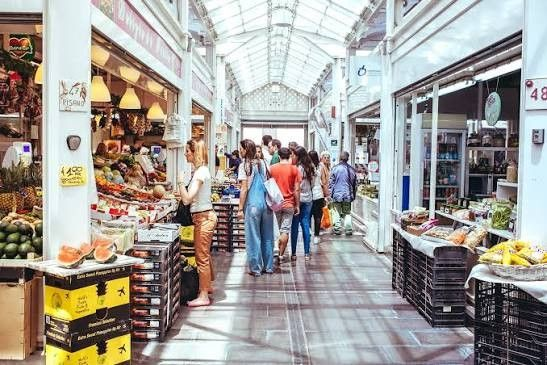
Inaugurado em 2012 num edifício contemporâneo de cerca de 5 mil m², coberto mas aberto nos quatro lados, o mercato substituiu a antiga feira do bairro e fica a poucos passos do Mattatoio, o velho matadouro que moldou a cozinha romana de miúdos (o 'quinto quarto'). É o mercado de bairro mais autêntico de Roma: ali convivem quitandeiros, açougueiros e peixeiros de toda a vida com bancas de street food que reinterpretam receitas romanas. Às vésperas do Natal, ganha o movimento de quem compra peixe e ingredientes para a ceia da Vigília, tradicionalmente sem carne.
Mordi e Vai (box de Sergio Esposito), com panini recheados de carnes cozidas e molho da tradição romana; FoodBox, com supplì e frituras; Pescheria Simona e Daniele (box 95), referência em peixe fresco.
Funcionamento em 24/12 não confirmado oficialmente; bancas individuais podem ter horários reduzidos na véspera de Natal.
Via Beniamino Franklin 12/E, 00153 Roma (acessos também pela Via Galvani, Via Volta, Via Ghiberti e Via Manuzio)
Regular: segunda a sábado, 7h00–15h30 (24/12/2026 é quinta-feira). Horário especial da Vigília de Natal não confirmado — verificar no site ou Instagram do mercado.
Entrada livre.
Chegar às 10h permite ver as bancas ainda abastecidas; no dia 24 o fluxo é intenso, e algumas bancas de comida podem fechar mais cedo ou nem abrir. Um panino da Mordi e Vai funciona como lanche antes do Volpetti.
Monte Testaccio
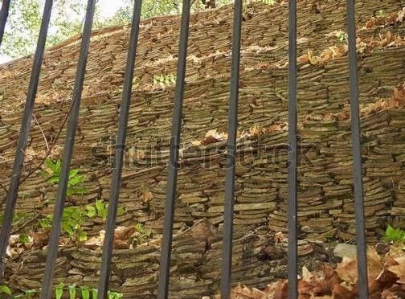
Colina artificial de cerca de 54 metros de altura e um quilômetro de circunferência, formada inteiramente por milhões de cacos de ânforas descartadas no antigo porto fluvial de Roma, junto aos armazéns (horrea) do Tibre. As peças, sobretudo de azeite, eram empilhadas de modo ordenado e cobertas com cal; muitas ainda trazem selos e inscrições pintadas com exportador, conteúdo e data — um arquivo comercial do Império a céu aberto. Mais tarde o monte foi palco de festas populares, e em sua base foram escavadas adegas e estábulos, hoje restaurantes e casas noturnas. A Piazza Testaccio, com sua fonte das ânforas, é o coração do bairro operário que cresceu ao redor.
Vista do perímetro do monte pela Via Zabaglia e pela Via di Monte Testaccio, onde os cacos aparecem nas encostas e nos 'grottini' da base; a Piazza Testaccio, ponto de encontro do bairro.
Subir o monte exige reserva prévia em data do calendário oficial; às 11h30 de 24/12 o mais provável é apenas vista externa. Se o grupo quiser subir, ligar para o 060608 com antecedência.
Monte Testaccio: Via Nicola Zabaglia, 24; Piazza Testaccio no centro do bairro, a poucas quadras
O interior do monte só é visitável com reserva pelo 060608 (diariamente, 9h–19h), em datas de um calendário oficial da Sovrintendenza; não há abertura livre. Visita em 24/12 não confirmada (e improvável). Piazza Testaccio: área externa, acesso livre.
Preço da visita reservada não confirmado — verificar no 060608. Vista externa gratuita.
Sem reserva, contente-se com a volta pelo perímetro (cacos visíveis nas encostas e nas paredes dos restaurantes da base). Não é permitido recolher fragmentos; use calçado baixo.
Volpetti e La Bottega delle Idee
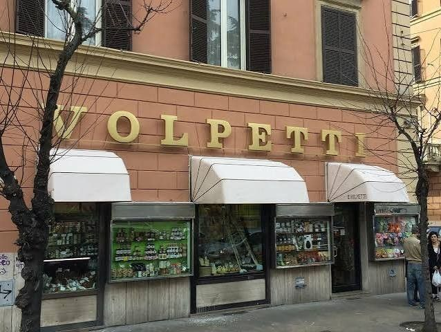
O Volpetti é uma instituição do Testaccio, salumeria-delicatéssen a cerca de 200 metros da Pirâmide Cestia, conhecida há décadas pelo balcão de embutidos e queijos. Ali se encontram culatello, guanciale, coppa, bresaola, pecorino, parmigiano e queijos de búfala, além de azeites, vinagres, mel, conservas, pães e doces da casa. Já La Bottega delle Idee existe, mas não é uma loja gastronômica: é um bazar de bairro na Piazza Testaccio que vende utensílios de cozinha, cerâmicas de Vietri, artigos para casa, presentes, brinquedos e itens de confeitaria.
No Volpetti, pedir para provar antes de comprar e levar embutidos embalados a vácuo; na Bottega delle Idee, as cerâmicas de Vietri são o achado para presentes.
Horários de 24/12 não confirmados em nenhum dos dois estabelecimentos. La Bottega delle Idee é bazar de utilidades e presentes, não empório gourmet — ajustar a expectativa no roteiro.
Volpetti: Via Marmorata, 47, 00153 Roma; La Bottega delle Idee: Piazza Testaccio, 4, 00153 Roma
Volpetti: segunda a sábado, 9h00–20h30, fechado aos domingos (horário de 24/12 não confirmado — verificar pelo +39 375 513 0898). Bottega delle Idee: segunda a sábado, 8h30–19h45 (horário de 24/12 não confirmado; tel. 06 575 7443).
Entrada livre.
Na véspera de Natal o Volpetti costuma ficar lotado de romanos fazendo compras para a ceia; ir com a lista pronta agiliza. Peça embalagem a vácuo para a viagem.
Galleria Borghese
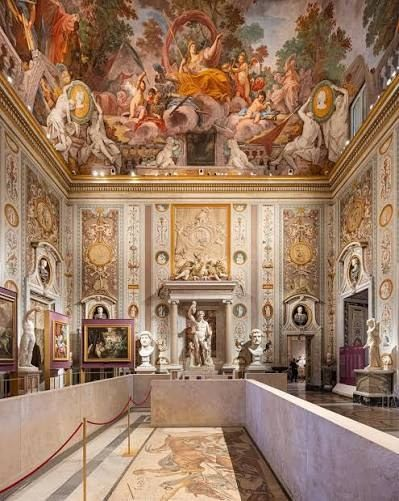
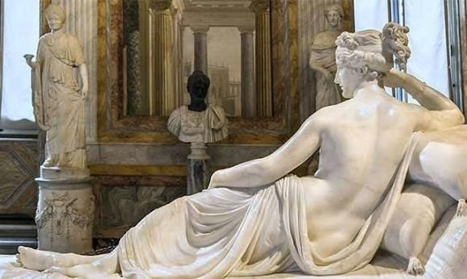
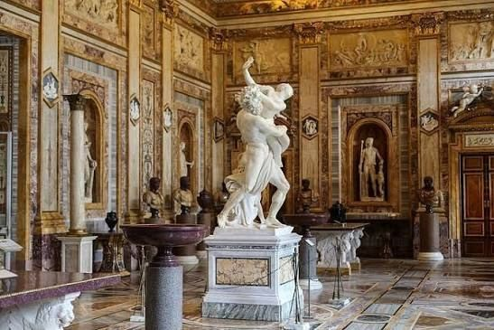
Instalada no Casino que o cardeal Scipione Borghese, sobrinho do papa Paulo V, mandou construir no início do século XVII, a galeria guarda uma das coleções particulares mais extraordinárias do mundo, reunida pelo próprio cardeal. É o grande santuário de Bernini — Apolo e Dafne, O Rapto de Prosérpina, Davi — e reúne ainda seis Caravaggios, Canova (Paulina Bonaparte), Rafael e Ticiano. A visita em horários fixos e com lotação limitada garante uma intimidade rara diante das obras.
O mármore de Apolo e Dafne, em que a pele parece virar casca de louro; e a sala de Caravaggio, com o Davi com a cabeça de Golias.
Horário de 14h30 não existe como turno: usar 14h00 (ou 15h00, empurrando a Villa Borghese). Horário especial de 24/12 não publicado — risco de fechamento antecipado na véspera; confirmar com a galeria.
Piazzale Scipione Borghese, 5, 00197 Roma (dentro da Villa Borghese)
Regular: terça a domingo, 9h00–19h00, último ingresso às 17h45; fecha 25/12 e 1º/01. Visitas em turnos de duas horas que começam de hora em hora (…14h–16h, 15h–17h…). Não há fechamento antecipado em 24/12 publicado no site oficial — confirmar perto da data (+39 06 32810).
Inteira € 16 + € 2 de taxa de reserva obrigatória; 18–25 anos € 2 + € 2; menores de 18 gratuitos (com reserva). Reserva obrigatória para todos, somente pelos canais oficiais; máximo de 5 ingressos por compra.
Para seis adultos são necessárias duas compras (limite de 5 por transação) para o mesmo turno. O horário planejado 14h30–16h00 não coincide com os turnos: reservar o turno das 14h00–16h00. Os ingressos esgotam com semanas de antecedência no Natal — comprar já.
A reservar Galleria Borghese — Turno 14:00–16:00; duas compras.
Villa Borghese e Terraço do Pincio
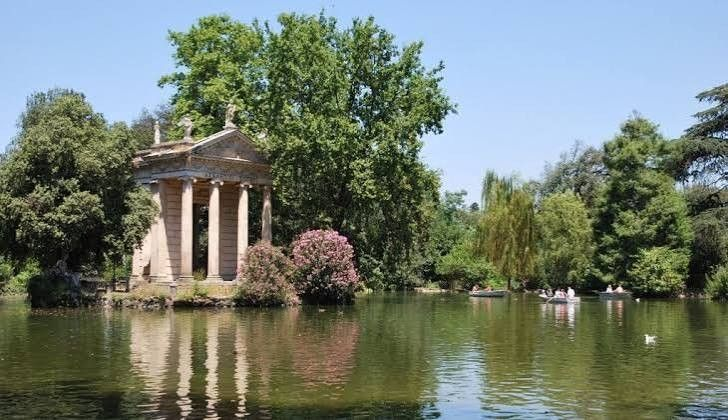
Os jardins foram traçados a partir de 1608 para o cardeal Scipione Borghese e, depois de reformas no século XVIII, passaram ao Estado italiano em 1903, quando se tornaram parque público. Hoje é o grande pulmão verde do centro, com o Giardino del Lago e seu templete de Esculápio, a Piazza di Siena e os Giardini Segreti. Ligado à villa por uma passarela sobre o Muro Torto, o passeio do Pincio foi desenhado por Giuseppe Valadier no início do século XIX e termina no terraço sobre a Piazza del Popolo.
O pôr do sol no Terraço do Pincio, com a cúpula de São Pedro dominando o horizonte e a Piazza del Popolo aos pés; o lago com o Tempietto di Esculapio.
No inverno o fechamento dos portões começa às 17h00 e o parque escurece cedo; não se demorar nas alamedas internas após o crepúsculo.
Entradas principais: Porta Pinciana, Piazzale Flaminio, Viale delle Belle Arti; Terraço do Pincio: Salita del Pincio / Piazzale Napoleone I
Área externa, acesso livre. Os portões do parque são abertos entre 6h30–8h30 e fechados entre 17h00–19h00 no período de novembro a fevereiro; o Pincio é indicado como sempre acessível.
Gratuito.
Em dezembro o sol se põe por volta das 16h40: sair da Galleria direto para o Pincio garante a luz dourada sobre a cidade. Descer depois pelas rampas até a Piazza del Popolo.
Jantar de Véspera de Natal
Ver fotos ›a definir
a definir
24/12 · 20:00 A reservar
Mesa para seis.
Mesa para seis às 20:00. Restaurante ainda a definir.
24/12, 20:00
Na Véspera, muitos restaurantes de Roma servem menu fixo ou fecham cedo: reserve com antecedência e confirme o horário de encerramento, por causa da Missa.
Missa da Noite de Natal com o Papa
Ver fotos ›A Missa da Noite de Natal presidida pelo papa é uma das celebrações mais concorridas do calendário litúrgico, com a proclamação solene da Kalenda — o anúncio do nascimento de Cristo — antes do início do rito. Leão XIV, em seu primeiro Natal como pontífice, em 2025, celebrou-a às 22h, retomando também a missa do dia de Natal. Assistir de dentro da basílica é uma experiência única; quem não consegue lugar pode acompanhar pelos telões da praça.
A Kalenda cantada na preparação e a procissão com a imagem do Menino Jesus.
Prazo: pedidos só até 8/12/2026, e o deferimento não é garantido. Horário de 2026 não confirmado.
Basílica de São Pedro, Cidade do Vaticano
Horário de 2026 ainda não publicado (em 27/10/2026 o Vaticano divulgou o calendário até 8/12, sem o Natal). Referência: em 2025, 24/12 às 22h, com preparação desde 21h40.
Gratuito, mas exige bilhete. Pedido à Prefeitura da Casa Pontifícia: por correio (Prefettura della Casa Pontificia, 00120 Città del Vaticano) ou fax +39 06 6988 5863, indicando data da celebração, número de bilhetes, nome do grupo, endereço postal e telefone. Uma fonte não oficial cita também o e-mail ordinanze@pontificalisdomus.va (não confirmado no site oficial). Pedidos após 8 de dezembro não são considerados. Retirada pessoal: segundo o site oficial, no guichê logo na entrada da Sala Paulo VI, na véspera ou conforme notificação; fontes não oficiais indicam a Porta de Bronze — seguir o que vier na resposta.
Enviar o pedido já, no início de novembro, para 6 pessoas — pedidos menores têm mais chance, então vale considerar dois pedidos de 3. Mesmo com bilhete, chegar com 2–3 horas de antecedência: o bilhete não garante assento. A fila de detectores fica mais pesada entre 17h e 19h30.
A reservar Missa da Noite de Natal — Pedido até 8/12.
Missa do Dia de Natal e Bênção Urbi et Orbi
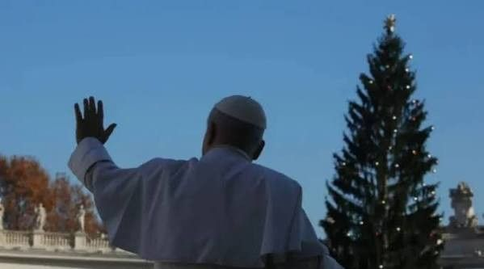
Ao meio-dia de Natal, o papa aparece na loggia central da basílica para a mensagem de Natal e a bênção 'à cidade e ao mundo', que concede indulgência plenária aos fiéis presentes ou que a acompanham pelos meios de comunicação. É um dos momentos públicos mais solenes do ano, transmitido para o mundo inteiro. Em 2025, Leão XIV recuperou a tradição de celebrar também a missa do dia de Natal, às 10h, dentro da basílica.
A aparição do papa no balcão central e a bênção; a banda da Guarda Suíça e das forças armadas italianas que costuma prestar honras na praça antes da bênção (não confirmado para 2026).
Horários de 2026 a confirmar no anúncio do Escritório das Celebrações Litúrgicas (normalmente em dezembro). A basílica fica fechada à visitação turística nessa manhã.
Basílica e Praça de São Pedro, Cidade do Vaticano
Referência 2025: missa do dia às 10h na basílica; Urbi et Orbi às 12h. O calendário oficial de 2026 ainda não foi publicado.
Praça: gratuita, sem bilhete, por ordem de chegada após revista. Missa das 10h dentro da basílica: provavelmente exige bilhete da Prefeitura da Casa Pontifícia (não confirmado).
Passar pela revista entre 9h e 10h para ficar com boa visão da loggia; vestir-se em camadas (frio e longa espera em pé) e levar documento. Do hotel, ir a pé pela Via Crescenzio ou Borgo Pio, evitando o funil da Via della Conciliazione.
A bênção Urbi et Orbi
"Urbi et orbi" é latim e quer dizer "à cidade e ao mundo". A cidade é Roma, da qual o papa é bispo, e o mundo é a Igreja inteira e toda a humanidade. A expressão ecoa uma fórmula da Roma antiga, que via a cidade (urbs) como o centro do mundo conhecido (orbis).
É a bênção mais solene que o papa concede, e acontece só em três ocasiões: no Natal, na Páscoa e logo depois da eleição de um novo papa, quando ele aparece pela primeira vez no balcão de São Pedro.
Ao meio-dia, o papa aparece na Loggia delle Benedizioni, o balcão central da fachada da basílica. Antes dele, a Guarda Suíça e as forças armadas italianas prestam honras na praça, e as bandas tocam o hino pontifício e o hino italiano.
O papa faz então a Mensagem de Natal, em que costuma falar da paz e lembrar os lugares do mundo em guerra ou em sofrimento. Depois, recita a bênção em latim e traça o sinal da cruz sobre a multidão. Durante anos, João Paulo II acrescentou votos de Feliz Natal em dezenas de línguas, e o português sempre esteve entre elas.
Junto com a bênção, a Igreja concede a indulgência plenária, isto é, o perdão das penas pelos pecados já confessados. Ela vale para quem está na praça e também, desde o século XX, para quem acompanha a bênção pela televisão, pelo rádio ou pela internet. As condições habituais são: confessar-se, comungar e rezar pelas intenções do papa, nos dias próximos.
A bênção nasceu na Idade Média, quando o papa abençoava o povo na basílica de São João de Latrão. Depois passou a ser dada do balcão de São Pedro. Entre 1870 e 1929, quando o Estado italiano tomou Roma e os papas se consideravam "prisioneiros do Vaticano", ela era dada só dentro da basílica, ou nem era dada. Pio XI voltou a dá-la do balcão externo ao ser eleito, em 1922, e o costume se firmou depois do acordo com a Itália, em 1929. Hoje é transmitida para o mundo inteiro.
‹ Voltar a Urbi et OrbiAlmoço de Natal
Ver fotos ›a definir
a definir
25/12 · 13:00 A reservar
Mesa para seis.
Mesa para seis, das 13:00 às 14:30. Restaurante ainda a definir.
25/12, 13:00
Para não perder tempo depois da bênção, convém escolher um lugar entre a Praça de São Pedro e o Gueto, ponto de partida da caminhada da tarde.
Area Sacra de Largo di Torre Argentina
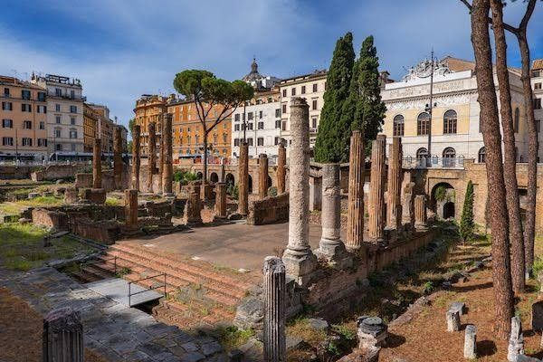
Uma praça rebaixada no meio do trânsito, com quatro templos da República romana, os mais antigos que se veem de pé no Campo de Marte. Foram descobertos em 1926–1929, quando Mussolini mandou demolir o bairro medieval que os cobria. Como não se sabe com certeza a que deus cada templo era dedicado, os arqueólogos os chamam de A, B, C e D. Atrás dos templos B e C fica a base da Cúria de Pompeu, o salão onde Júlio César foi apunhalado nos Idos de Março de 44 a.C. Hoje as ruínas também são a casa de uma colônia de gatos.
O templo B, redondo, no centro; atrás dele e do C, o bloco de tufo da Cúria de Pompeu, onde César morreu. O botão dourado abaixo explica cada ruína.
Em 25/12 a passarela está fechada: o passeio é feito de cima, pela calçada, e funciona bem. Siga a ordem do tópico "Ruína por ruína".
Largo di Torre Argentina (Via di San Nicola de' Cesarini), 00186 Roma
Vista de cima, da calçada: sempre livre. Passarela no interior (aberta em 2023): ter–dom 9h30–16h00 no inverno, 24/12 até 14h00, FECHADA em 25/12. Santuário dos gatos: horário em 25/12 não confirmado.
Vista da calçada: grátis. Passarela: € 7 (não residentes), compra antecipada obrigatória, entrada na Via di San Nicola de' Cesarini, em frente ao nº 10.
Dê a volta pela balaustrada. Do lado do Corso Vittorio Emanuele você vê os templos em ordem: A, B, C e D (este, já junto da Via Florida).
Largo Argentina, ruína por ruína
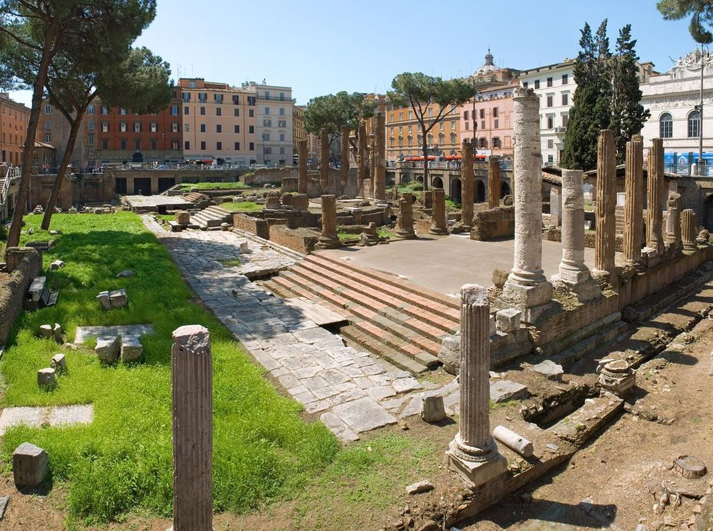
As letras A, B, C e D não estão escritas nos templos: são os nomes que os arqueólogos dão a eles, porque não há certeza sobre os deuses a que eram dedicados. Desde 2023 há uma passarela dentro da área com painéis que usam essas mesmas letras.
Veja a planta a seguir. De cima, comece pelo lado do Corso Vittorio Emanuele II e vá descendo em direção à Via Florida: os templos aparecem na ordem A, B, C e D, todos virados para o leste, para a Via di San Nicola de' Cesarini. Termine no canto da Via Florida com a Via di Torre Argentina, onde fica a escada do santuário dos gatos.
Dê uns 20 a 30 minutos para dar a volta com calma.
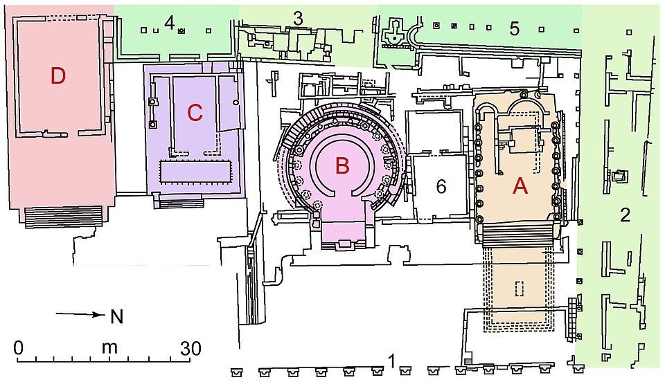
A, B, C, D: os quatro templos republicanos.
1: pórtico em frente aos templos (Porticus Minucia?).
2: o Hecatostylum, o "pórtico das cem colunas", no limite norte.
3: Cúria de Pompeu, onde César foi morto.
4 e 5: latrinas públicas ao lado da Cúria.
6: edifício de época imperial entre os templos A e B, de função incerta.
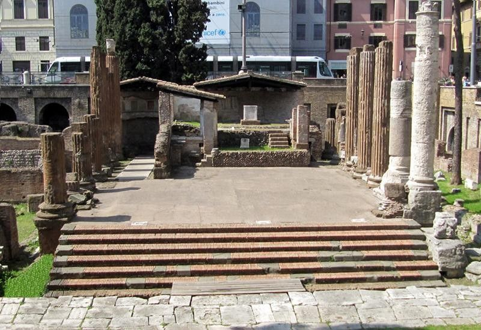
Na planta: em laranja, à direita, com as colunas em volta e a abside da igreja no fundo.
Construído em meados do século III a.C., provavelmente pelo cônsul Lutácio Cátulo, para agradecer a vitória naval sobre Cartago em 241 a.C. A deusa mais provável é Juturna, ninfa das fontes. Era um templo retangular sobre um pódio alto de tufo; mais tarde foi ampliado com colunas em volta, e é delas que restam os fustes altos que se veem hoje.
Na Idade Média o templo virou a igreja de San Nicola de' Calcarario, consagrada em 1132. Ainda dá para ver a base das absides da igreja encaixada nas colunas romanas: dois mil anos de Roma num único lugar.
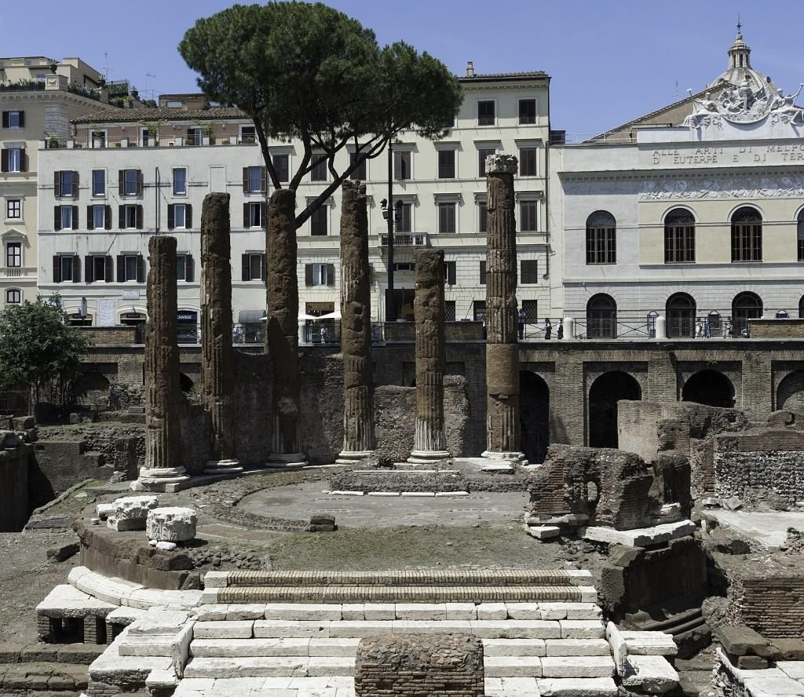
Na planta: em rosa, no centro.
É o mais fácil de reconhecer: o único circular. Foi prometido em 101 a.C. por Quinto Lutácio Cátulo, na batalha de Vercelas contra os cimbros, e dedicado à Fortuna Huiusce Diei, a "Fortuna do dia de hoje", a sorte do momento.
Tinha 18 colunas em volta; seis continuam de pé. Lá dentro ficava uma estátua colossal da deusa, com cabeça, braços e pés de mármore. A cabeça, com quase 1,5 metro de altura, foi achada aqui em 1928 e hoje está no museu Centrale Montemartini.
O pódio redondo e a escada de entrada, virada para a rua antiga.
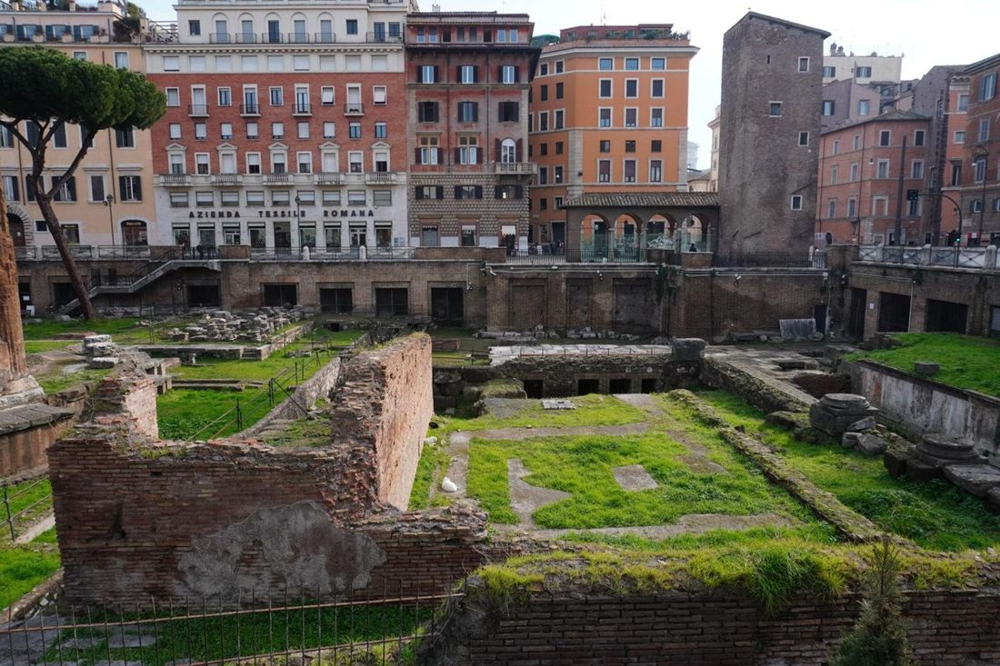
Na planta: em lilás.
Começou a ser construído no início do século III a.C., por volta de 290 a.C., o que faz dele o templo mais antigo da área. Provavelmente era dedicado a Feronia, uma antiga deusa itálica da fertilidade e dos libertos. Tinha um pódio alto de tufo, com quatro colunas na frente e uma escada de 20 degraus.
Depois do incêndio de 80 d.C. ganhou uma cela nova com piso de mosaico preto e branco.
O pódio de tufo, simples e escuro, bem diferente do mármore das épocas posteriores. Atrás dele começa a Cúria de Pompeu.
Na planta: em vermelho claro, à esquerda; a parte de cima continua sob a Via Florida.
O maior dos quatro, do início do século II a.C. Foi prometido em 190 a.C. pelo pretor Emílio Régilo numa batalha naval contra a frota do rei Antíoco III e dedicado aos Lares Permarini, os protetores dos navegantes. Foi totalmente refeito no fim do século I a.C.
A maior parte dele continua enterrada sob a Via Florida: vê-se a frente, com o pódio revestido de travertino e a escada ladeada por duas fontes.
É aqui, entre as pedras do templo D, que os gatos costumam tomar sol.
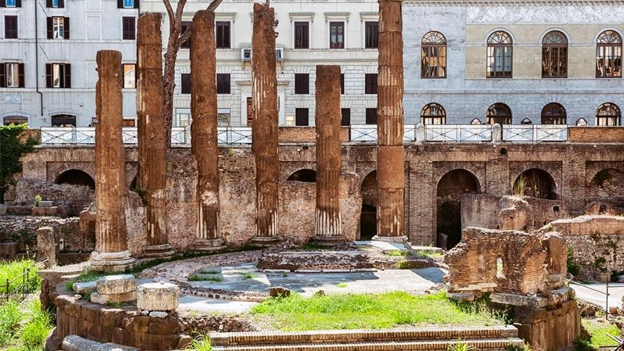
Na planta: o número 3, no alto, atrás do templo B, entre as latrinas 4 e 5.
Atrás dos templos B e C, do lado oeste da praça, fica um grande bloco retangular de tufo: é a base da Cúria de Pompeu. Ela fazia parte do enorme conjunto construído por Pompeu em 55 a.C., com jardins, pórticos e o primeiro teatro de pedra de Roma, que ocupava o terreno onde hoje estão as ruas atrás do Largo, perto do Campo de' Fiori.
Como o Senado estava em obras, os senadores se reuniam neste salão. Foi ali, em 15 de março de 44 a.C., os Idos de Março, que Júlio César foi cercado por cerca de 60 conspiradores, liderados por Bruto e Cássio, e recebeu 23 punhaladas. Caiu aos pés da estátua de Pompeu, seu antigo rival.
Depois, Augusto declarou o lugar amaldiçoado e mandou fechar o salão.
Olhe para o fundo da área, atrás do templo redondo (B) e do C: o muro baixo de blocos de tufo é a base da Cúria.
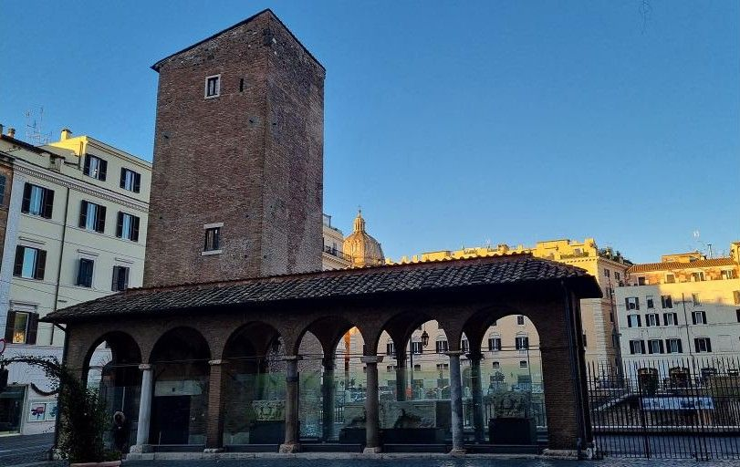
A torre de tijolos no canto da praça é a Torre del Papito, do século XIV, que pertencia a uma família medieval. Hoje é a bilheteria da passarela.
O nome "Argentina" não tem nada a ver com o país: vem de Argentoratum, o nome latino de Estrasburgo, cidade de Johannes Burckardt, mestre de cerimônias papal que construiu uma torre aqui perto em 1503.
Desde 1993, voluntários cuidam de centenas de gatos abandonados que vivem entre as ruínas, castrados, vacinados e alimentados. A entrada fica numa escada no canto da Via Florida com a Via di Torre Argentina, dentro da área do templo D. Diz a lenda que os gatos estão ali para guardar o lugar onde César morreu. Doações são bem-vindas.
‹ Voltar a Largo ArgentinaPórtico de Otávia e Gueto Judaico
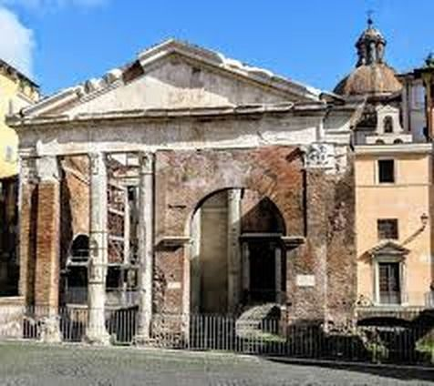
Augusto reconstruiu o pórtico entre 27 e 23 a.C. e o dedicou à irmã Otávia; era um grande quadripórtico com templos, bibliotecas grega e latina e uma sala de reuniões, restaurado por Septímio Severo após um incêndio. Restam o vestíbulo de entrada e um canto, incrustados na igreja de Sant'Angelo in Pescheria. Na Idade Média abrigou o mercado de peixe da cidade e hoje marca o coração do antigo Gueto, o bairro judeu mais antigo da Europa ocidental, criado em 1555.
As colunas antigas emolduradas pelo casario do Gueto e a passarela arqueológica que liga o pórtico ao Teatro de Marcelo.
Via del Portico d'Ottavia, 29, 00186 Roma
Área externa, acesso livre (indicado como sempre visitável).
Gratuito.
No dia de Natal muitos restaurantes judaico-romanos da Via del Portico d'Ottavia podem abrir (25/12 não é feriado judaico), mas não há confirmação — vale reservar se quiserem provar carciofi alla giudia.
Teatro de Marcelo
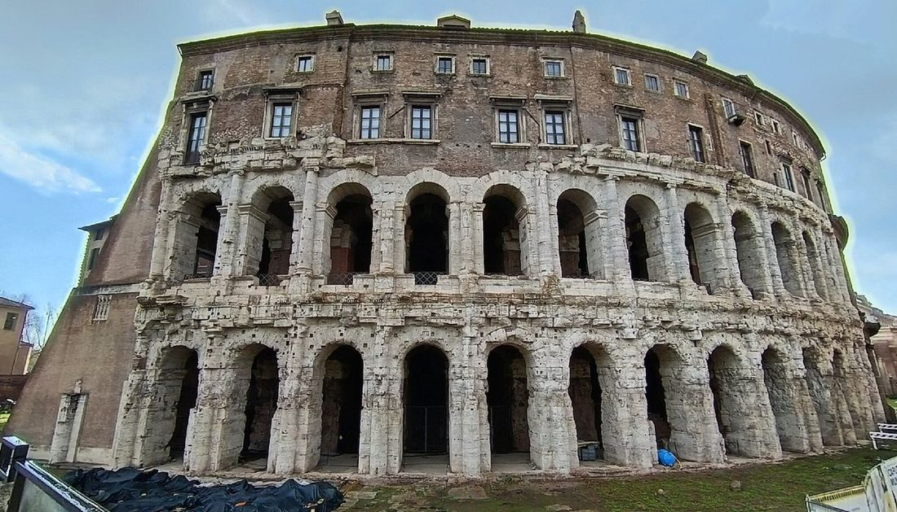
Iniciado por Júlio César e concluído por Augusto por volta de 13–11 a.C., foi dedicado a Marco Cláudio Marcelo, sobrinho e herdeiro designado do imperador, morto jovem em 27 a.C. Na Idade Média virou fortaleza e, no século XVI, Baldassarre Peruzzi ergueu sobre ele um palácio para os Savelli, depois passado aos Orsini — por isso as arcadas antigas sustentam até hoje apartamentos habitados. É o modelo arquitetônico que inspirou a sobreposição de ordens do Coliseu.
A silhueta inconfundível de arcos romanos coroados por um palácio renascentista.
Via del Teatro di Marcello, 00186 Roma
Área externa, acesso livre; o monumento é visível apenas por fora.
Gratuito.
A melhor vista é da passarela no lado do Portico d'Ottavia, com as colunas do templo de Apolo em primeiro plano.
Templo de Apolo Sosiano
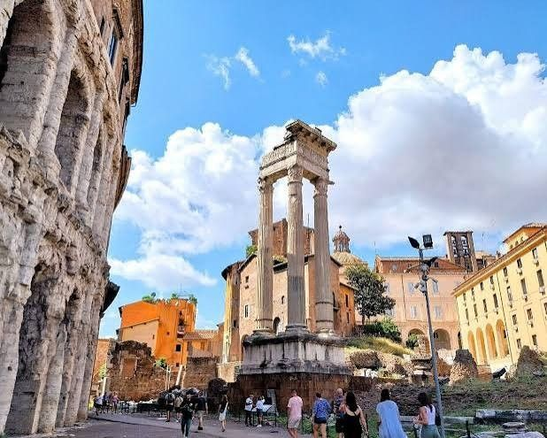
Erguido em 433–431 a.C. após uma epidemia e dedicado originalmente a Apolo Médico, foi integralmente reconstruído em 32 a.C. pelo cônsul Caio Sósio, de quem herdou o nome. Sua cela era repleta de obras de arte, quase um museu, e o Senado reunia-se ali com frequência. Ao lado ficava o templo de Belona, onde se votavam os triunfos e se declarava simbolicamente a guerra.
As três colunas coríntias junto ao Teatro de Marcelo, um dos cenários mais fotogênicos da Roma antiga. O botão dourado mostra como o templo era.
Via del Teatro di Marcello, ao lado do Teatro de Marcelo, 00186 Roma
Área externa, acesso livre (vista da rua).
Gratuito.
Templo de Apolo Sosiano: como era
No centro, o templo de Apolo: alto sobre um pódio, com a escada na frente e uma fileira de colunas coríntias em volta.
THEATRVM MARCELLI, à esquerda: o Teatro de Marcelo, encostado no templo. É a fachada de arcos que vocês acabaram de ver.
PORTICVS OCTAVIAE, atrás, à esquerda: o grande pórtico que Augusto dedicou à irmã. A entrada que resta hoje é o Pórtico de Otávia, a parada anterior.
AEDES BELLONAE, à direita: o templo de Belona, deusa da guerra, colado ao de Apolo. Ali o Senado recebia os generais que pediam o triunfo.
As três colunas de pé hoje são da quina da frente do templo de Apolo, no lado do teatro.
O primeiro templo foi erguido em 433–431 a.C., depois de uma epidemia, para Apolo Médico, o deus que curava. Era o único templo de Apolo em Roma até a época de Augusto.
Por volta de 32 a.C. ele foi totalmente refeito pelo cônsul Caio Sósio, aliado de Marco Antônio, e por isso ganhou o nome de "Sosiano". Depois da derrota de Antônio em Áccio, Sósio foi perdoado por Augusto, e a decoração do templo passou a celebrar as vitórias do novo imperador.
A cela era quase um museu, cheia de estátuas gregas trazidas como troféu. O frontão original, com a luta entre gregos e amazonas, está hoje na Centrale Montemartini.
As colunas têm caneluras de dois tamanhos, uma larga e uma estreita alternadas, um detalhe raro. No alto, o friso é decorado com ramos de louro, a planta de Apolo, e cabeças de boi enfeitadas para o sacrifício.
As três colunas foram reerguidas em 1940, com as peças originais encontradas no local.
‹ Voltar a Apolo SosianoArco dos Argentários e Arco de Jano
O Arco de Jano é um maciço arco de quatro faces, provavelmente da época de Constâncio II (337–361 d.C.), que marcava um cruzamento no antigo Velabro, a baixada entre o Palatino e o Capitólio. A poucos metros, o pequeno e refinado Arco dos Argentários foi dedicado em 204 d.C. pelos cambistas e comerciantes de gado a Septímio Severo e sua família, e está encostado à igreja medieval de San Giorgio al Velabro. Juntos, são testemunhos do bairro comercial que ligava o porto do Tibre ao Fórum.
Os relevos severianos do Arco dos Argentários, com figuras apagadas após a damnatio memoriae de Geta.
Via del Velabro, 00186 Roma (junto a San Giorgio al Velabro)
Área externa, acesso livre (vista da rua).
Gratuito.
Procurar no Arco dos Argentários as lacunas nos relevos — apagamento de Geta ordenado por Caracala.
Templo de Portuno
O templo RETANGULAR do Foro Boário, o antigo mercado de gado ao lado do primeiro porto fluvial de Roma. Era dedicado a Portuno, o deus dos portos, das portas e das chaves, que protegia os barcos que chegavam pelo Tibre. O edifício que se vê hoje é do início do século I a.C., em tufo e travertino, com quatro colunas jônicas na frente e meias-colunas coladas nas paredes laterais. Está tão inteiro porque no século IX virou igreja, mais tarde chamada Santa Maria Egiziaca, e só foi devolvido à forma de templo romano no século XX.
É o retangular, com colunas jônicas (capitel em espiral). Atrás dele, do outro lado da praça, aparece a torre românica de Santa Maria in Cosmedin, onde fica a Bocca della Verità.
Via Luigi Petroselli, junto à Piazza della Bocca della Verità, 00186 Roma
Área externa, acesso livre; os templos são visíveis apenas por fora.
Gratuito.
Templo de Hércules Vencedor
O templo REDONDO do Foro Boário, a poucos passos do de Portuno. Foi construído no fim do século II a.C. em mármore grego trazido do monte Pentélico, perto de Atenas, e é considerado o edifício de mármore mais antigo que sobreviveu em Roma. Era dedicado a Hércules Vencedor, protetor dos comerciantes do mercado; a tradição liga sua construção a um rico mercador de azeite. Tem 20 colunas coríntias em volta da cela circular. Também se salvou por ter virado igreja na Idade Média; o telhado de telhas é moderno, não romano.
É o redondo, com colunas coríntias (capitel com folhas de acanto). Por muito tempo foi chamado, por engano, de "Templo de Vesta", por causa da forma parecida com a do templo do Fórum.
Piazza della Bocca della Verità, 00186 Roma
Área externa, acesso livre; os templos são visíveis apenas por fora.
Gratuito.
Bocca della Verità e Santa Maria in Cosmedin
A igreja, citada desde o século VI, foi ampliada pelo papa Adriano I em 782 sobre a Ara Máxima de Hércules e ganhou no século XII a forma atual, com o campanário românico de sete andares e o piso cosmatesco. O nome vem do mosteiro Kosmidion de Constantinopla, ligado à comunidade grega que a servia. No pórtico está a Bocca della Verità, disco de mármore de 1,8 m — provavelmente uma tampa de escoamento romana — que, segundo a lenda medieval, morde a mão de quem mente; o filme 'A Princesa e o Plebeu' (1953) a tornou mundialmente famosa.
A foto com a mão na Bocca e, dentro, o piso cosmatesco e o baldaquino gótico de 1294.
Funcionamento em 25/12 não confirmado; possível fechamento ou horário reduzido no dia de Natal.
Piazza della Bocca della Verità, 18, 00186 Roma
Regular: diariamente, 9h30–17h50 (com pausa 13h00–14h00 segundo o Turismo Roma). Abertura em 25/12 NÃO confirmada — é dia litúrgico especial; verificar no site cosmedin.org ou pelo 06 678 7759. Exterior da igreja e campanário: área externa, acesso livre.
Igreja gratuita; para a foto na Bocca foi instituída uma contribuição (€ 2 em 2016) — valor atual não confirmado.
A fila para a foto costuma ser longa; se estiver fechado, a Bocca é parcialmente visível pela grade do pórtico.
Circo Máximo
No vale entre o Palatino e o Aventino corriam-se bigas desde a época dos reis; César construiu o primeiro circo de alvenaria e Trajano o reconstruiu quase por inteiro. Com cerca de 600 por 140 metros, foi o maior edifício de espetáculos da Antiguidade e funcionou até o início do século VI. Hoje o grande gramado em forma de pista, com as ruínas dos palácios imperiais do Palatino ao fundo, é um dos panoramas mais evocativos de Roma.
A vista do Palatino a partir da pista e, na ponta curva, a Torre della Moletta medieval. O botão dourado mostra como era o circo.
Área arqueológica e Circo Maximo Experience fechadas em 25/12 — apenas vista externa.
Via del Circo Massimo / Viale Aventino, 00186 Roma
Gramado/vale: espaço aberto, vista livre. Área arqueológica escavada (extremidade leste, com a Torre della Moletta): FECHADA em 25/12. Circo Maximo Experience (realidade aumentada): fechada em 25/12.
Gramado gratuito; área arqueológica com bilhete (valor não confirmado).
Caminhar pela pista no sentido do Viale Aventino ao fim da tarde, quando a luz bate nas ruínas do Palatino, e seguir direto para o bar.
Circo Máximo: como era
No centro corre a pista de areia, onde as quadrigas davam sete voltas. A faixa comprida no meio é a spina, o canteiro central, decorada com estátuas, pequenos templos e um obelisco egípcio.
Em volta, as arquibancadas: segundo Plínio, o Velho, cabiam cerca de 250 mil pessoas, o maior público de qualquer edifício da Antiguidade.
Na ponta reta ficavam os carceres, os portões de largada; na ponta curva, o arco triunfal de Tito. É nessa ponta curva que hoje está a Torre della Moletta.
As corridas de bigas e quadrigas eram a grande paixão de Roma, muito mais populares que os gladiadores. Os cocheiros corriam por quatro equipes, identificadas por cores: verdes, azuis, vermelhos e brancos. A torcida era tão fanática quanto a do futebol de hoje.
O imperador assistia do alto do Palatino, de um camarote ligado ao palácio. Os cocheiros campeões ficavam riquíssimos e famosos.
Augusto trouxe do Egito o obelisco de Ramsés II e o colocou na spina em 10 a.C. É o mesmo que vocês viram no dia 20, no centro da Piazza del Popolo.
Mais tarde, Constâncio II acrescentou um segundo obelisco, ainda maior, que hoje está na praça de São João de Latrão, a primeira parada do dia 27.
Os dois foram achados quebrados no terreno do circo no século XVI e reerguidos pelo papa Sisto V.
‹ Voltar a Circo MáximoRosso
Rosso
Viale Aventino, 32, 00153 Roma — tel. +39 06 6442 0656
25/12 · 17:00 A confirmar
Confirmado: restaurante e bar perto do Circo Máximo, com vários ambientes — cocktail bar, pizzaria, grelha e cozinha aberta — e mesas externas. Funciona do café da manhã à madrugada, misturando sabores internacionais com cozinha romana e italiana. Faixa de preço intermediária.
Coquetel ao fim do passeio, a poucos passos do Circo Máximo; aceita reservas pelo TheFork.
Funcionamento em 25/12 não confirmado; ter alternativa no Aventino/Testaccio caso esteja fechado.
Viale Aventino, 32, 00153 Roma — tel. +39 06 6442 0656
Regular: segunda a sábado, 8h00–2h00; domingo, 10h00–2h00. Abertura em 25/12 às 17h00 NÃO confirmada — verificar pelo telefone ou site ristoranterosso.it.
Consumo à la carte.
Reservar mesa para seis pelo TheFork ou por telefone; no dia de Natal muitos bares de Roma fecham ou abrem só para almoço.
Galleria Colonna
Palácio de uma das famílias mais antigas e poderosas de Roma, ainda hoje residência dos Colonna. A galeria foi encomendada em 1654 pelo cardeal Girolamo I Colonna e pelo sobrinho Lorenzo Onofrio, com obras de Antonio Del Grande e, depois, de Bernini, Schor e Carlo Fontana; foi inaugurada em 1700. A abóbada celebra a vitória cristã em Lepanto (1571), com um almirante Colonna como protagonista. É um dos salões barrocos mais deslumbrantes da cidade e abre ao público apenas aos sábados de manhã.
O Salão Grande dourado, com espelhos e afrescos, e a bala de canhão francesa de 1849 cravada na escadaria; a rota completa inclui os apartamentos da Princesa Isabelle e o jardim.
Via della Pilotta, 17 (entrada de sábado); acesso para mobilidade reduzida pela Piazza SS. Apostoli, 66
Sábado 26/12: aberto. Abre todos os sábados do ano, inclusive feriados, das 9h15 às 13h15 (último acesso). Às sextas, só visitas guiadas com reserva; demais dias, apenas visitas privadas.
Ingressos já comprados. Referência: rota curta (galeria, apartamento Pio e jardins) 15 €; rota completa (inclui apartamentos da Princesa Isabelle) 25 €; audioguia +5 €.
Chegar às 9h05 na Via della Pilotta: a fila inicial costuma ser a mais rápida. Conferir no ingresso se a rota é curta ou completa — a completa pede quase as duas horas reservadas.
Confirmado Galleria Colonna
Fontana di Trevi
Ver fotos ›Ponto final do Aqueduto Virgem, o único aqueduto romano antigo ainda em funcionamento contínuo. O projeto de Nicola Salvi venceu o concurso aberto por Clemente XII em 1732, e a obra foi concluída por Giuseppe Pannini. Oceano domina a cena sobre uma carruagem em forma de concha puxada por cavalos — um agitado, outro sereno — guiados por tritões. Foi restaurada em 1989–91 e em 2014, com patrocínio da Fendi.
Os relevos da donzela que indica a fonte aos soldados e de Agripa ordenando o aqueduto; nas laterais, as alegorias da Abundância e da Salubridade.
Acesso à bacia pago (2 €) e com controle de lotação desde fevereiro de 2026; em feriado de fim de semana pode haver fila — comprar antes.
Piazza di Trevi
Praça aberta sempre. Desde 2/2/2026, o acesso à área junto à bacia é pago e controlado: segundo a imprensa, das 9h às 22h aos sábados e domingos (das 11h30 às 22h de segunda a sexta). Em 26/12 (sábado), portanto, o acesso pago estará em vigor às 11h30.
2 € por pessoa para não residentes (6 pessoas = 12 €). Isentos: residentes de Roma, crianças pequenas e pessoas com deficiência e acompanhante. Venda online no site oficial (fontanaditrevi.roma.it), em postos de informação turística e museus cívicos, ou no local, apenas com cartão/contactless.
Comprar os 6 ingressos online na véspera para não perder tempo na fila. A capacidade da área da bacia é limitada (cerca de 400 pessoas simultâneas, segundo a imprensa); pela tradição, uma moeda garante a volta a Roma.
A comprar Fontana di Trevi — área da fonte — € 2 por pessoa.
Salumeria Roscioli
Ver fotos ›Salumeria Roscioli
Via dei Giubbonari, 21 (Antico Forno Roscioli: Via dei Chiavari, 34)
26/12 · 12:30 A confirmar
Provavelmente fechada em Santo Stefano.
Mistura de delicatessen e restaurante da família Roscioli, padeiros em Roma há gerações. Balcão de frios, anchovas e queijos de pequenos produtores, adega com cerca de 3.000 rótulos e massas romanas de referência — a carbonara é das mais celebradas da cidade. A poucos passos, o Antico Forno Roscioli é a padaria histórica da família, famosa pela pizza bianca e pela pizza al taglio.
Carbonara, cacio e pepe e a seleção de burrata e presunto; no Forno, pizza bianca recém-saída e pizza rossa.
CONFLITO PROVÁVEL: no último Natal, Salumeria e Antico Forno Roscioli ficaram fechados em 26/12. Confirmar com o restaurante; se fechar de novo, trocar a parada das 12h30 (o almoço principal já é no Alfredo às 14h45).
Via dei Giubbonari, 21 (Antico Forno Roscioli: Via dei Chiavari, 34)
Regularmente aberto todos os dias, das 9h às 23h30 (Guia Michelin). Na temporada de festas 2025/26 a Salumeria fechou no jantar de 24/12 e nos dias 25 e 26/12; o Antico Forno também fechou em 25 e 26/12 e 1/1. Calendário de 2026 não confirmado — verificar.
Reserva necessária para refeição (tel. +39 06 687 5287).
Se o plano for só um lanche, o Forno é a alternativa rápida — mas também costuma fechar em 26/12.
Campo de' Fiori
Ver fotos ›Antigo campo florido transformado em praça no século XV, logo cercado de hospedarias para peregrinos. Foi também lugar de execuções públicas: aqui o filósofo Giordano Bruno morreu na fogueira em 17 de fevereiro de 1600, acusado de heresia. Sua estátua sombria, de Ettore Ferrari, foi erguida em 1889 exatamente no ponto da fogueira, homenagem ao livre pensamento. Desde 1869 a praça abriga um mercado diário.
A estátua encapuzada de Giordano Bruno e a inscrição dedicada a ele no pedestal; o vaivém de bares e bancas ao redor.
Em 26/12 (Santo Stefano) o mercado pode não montar; a praça vale a passagem de qualquer forma.
Piazza Campo de' Fiori
Praça sempre aberta. Mercado de segunda a sábado, das 6h às 14h; fecha aos domingos. Funcionamento em feriados (26/12) não confirmado.
Gratuito.
Ler a inscrição do pedestal, dedicada a Bruno 'pelo século que ele previu', no local exato da fogueira.
Piazza Farnese
Ver fotos ›Praça aristocrática dominada pelo Palazzo Farnese, encomendado pelo cardeal Alessandro Farnese — futuro papa Paulo III — a Antonio da Sangallo, o Jovem. A obra começou em 1514, parou com o Saque de Roma (1527) e, a partir de 1546, passou à direção de Michelangelo. Duas grandes banheiras de granito egípcio, tradicionalmente atribuídas às Termas de Caracala, foram transformadas em fontes por volta de 1626, com projeto de Girolamo Rainaldi.
A fachada renascentista do palácio e as fontes gêmeas com o lírio dos Farnese.
Piazza Farnese
Espaço público, acesso livre a qualquer hora.
Gratuito.
Melhor vista do palácio a partir do centro da praça, entre as duas fontes; visita interna não prevista no roteiro (não verificada).
Via Giulia, Fontana del Mascherone e Arco Farnese
Ver fotos ›Traçada por Bramante a pedido do papa Júlio II (1503–1513), a Via Giulia corre reta por cerca de um quilômetro — raridade na Roma do século XVI — e virou endereço de nobres e artistas como Rafael, Cellini e Borromini. O Arco Farnese, desenhado por Michelangelo, é o único trecho realizado de um projeto que ligaria o palácio a uma ponte sobre o Tibre jamais construída. Ao lado, a Fontana del Mascherone (c. 1626, provavelmente de Rainaldi) derrama água de uma máscara antiga em uma banheira romana de granito.
O arco coberto de hera; a máscara de olhos arregalados — conta-se que, em festas, os Farnese a faziam jorrar vinho, como nos três dias de 1720; Santa Maria dell'Orazione e Morte, com caveiras na fachada.
Via Giulia (do Arco Farnese/Via del Mascherone até San Giovanni dei Fiorentini)
Rua pública, acesso livre.
Gratuito.
Percorrer do Arco Farnese em direção a San Giovanni dei Fiorentini; o Palazzo Falconieri, de Borromini, tem falcões com busto de mulher nos cantos.
Il Vero Alfredo
Ver fotos ›Il Vero Alfredo
Piazza Augusto Imperatore, 30 (confirmado)
26/12 · 14:45 Confirmado
Mesa para seis.
Casa que se apresenta como berço das fettuccine all'Alfredo: em 1908, Alfredo Di Lelio criou o prato — massa fresca, manteiga e parmesão — para devolver o apetite à mulher, Ines, após o nascimento do filho Armando. A fama internacional veio nos anos 1920, quando Mary Pickford e Douglas Fairbanks, em lua de mel, presentearam Alfredo com garfo e colher de ouro, usados até hoje nas mesas dos convidados ilustres. Após a guerra, o filho reabriu a casa no endereço atual; hoje é tocada pelos netos e bisneta, e o acervo de cerca de 450 fotos de celebridades é protegido pelo Ministério da Cultura.
As fettuccine 'Le Bionde' finalizadas à mesa com os talheres de ouro; a galeria de fotos de visitantes famosos nas paredes.
O almoço, pelo site, vai até 15h30; uma permanência até 16h30 pode extrapolar o serviço da cozinha — pedir tudo logo ao sentar e confirmar com o restaurante.
Piazza Augusto Imperatore, 30 (confirmado)
Fecha às segundas. Terça a domingo: almoço 12h30–15h30; jantar 19h30–23h30; lounge bar à tarde. Sábado 26/12 não é segunda — aberto pelo horário regular; abertura especial de feriado não confirmada, mas a reserva está confirmada.
Reserva confirmada para 6 (tel. +39 06 6878734).
A disputa com o Alfredo alla Scrofa (1914) é antiga — aqui a casa defende a data de 1908. Saindo da Via Giulia às 14h, são cerca de 25–30 min a pé; táxi ajuda a não atrasar.
Piazza del Campidoglio e a Cordonata
Ver fotos ›A história do Capitólio ›Coração religioso da Roma antiga e sede do governo municipal até hoje, o Capitólio foi redesenhado por Michelangelo a pedido do papa Paulo III a partir de 1536, num projeto concluído depois de sua morte. A Cordonata, rampa larga e suave, sobe até a praça, coroada pelas estátuas de Castor e Pólux; no centro, o piso oval com a estrela de doze pontas envolve a estátua equestre de Marco Aurélio. A peça na praça é uma réplica de 1997 — o bronze original está protegido nos Museus Capitolinos.
A subida pela Cordonata ao anoitecer, com a fachada do Palazzo Senatorio iluminada; em 2025 a praça recebeu uma árvore de Natal dedicada à paz.
Piazza del Campidoglio, 00186 Roma (acesso pela Cordonata, a partir da Piazza d'Aracoeli)
Praça aberta a qualquer hora, iluminada à noite (sábado 26/12, 18h40–19h05 sem restrição). Museus Capitolinos não fazem parte desta visita.
Gratuito.
Subam pela Cordonata (e não pela escadaria íngreme da Aracoeli, à esquerda) — é a entrada pensada por Michelangelo para revelar a praça de frente.
O Capitólio: a história
O Capitólio é a menor das sete colinas de Roma, mas era a mais sagrada. Tinha dois cumes: ao sul, o Capitolium, com o grande templo de Júpiter; ao norte, a Arx, a cidadela, onde hoje está a igreja de Santa Maria in Aracoeli. A praça de Michelangelo fica justamente na depressão entre os dois, onde, segundo a lenda, Rômulo recebia os fugitivos que vinham povoar a nova cidade.
O templo de Júpiter Ótimo Máximo foi dedicado em 509 a.C., no primeiro ano da República. Era o maior templo de Roma, dedicado à tríade Júpiter, Juno e Minerva. Era ali que terminavam os desfiles de triunfo dos generais vitoriosos, e ali o Senado se reunia na primeira sessão de cada ano. Restos das fundações podem ser vistos dentro dos Museus Capitolinos.
No outro cume, junto ao templo de Juno Moneta, ficava a casa da moeda, e é de "Moneta" que vem a palavra "moeda". A lenda conta que, em 390 a.C., os gansos sagrados de Juno grasnaram e acordaram os defensores durante um ataque noturno dos gauleses, salvando a colina. E do lado sul ficava a Rocha Tarpeia, de onde eram atirados os traidores.
Com o fim do império, os templos ruíram e a colina virou pasto, o chamado Monte Caprino, o monte das cabras. Mas o prestígio do lugar não morreu. Em 1143, o povo de Roma se rebelou contra o poder do papa e restaurou ali um Senado: o Capitólio virou a sede do governo da cidade, papel que mantém há quase nove séculos. O Palazzo Senatorio foi construído sobre o Tabulário, o antigo arquivo do Estado romano, voltado para o Fórum. Em 1341, o poeta Petrarca foi coroado ali com louros.
Em 1471, o papa Sisto IV doou ao povo romano um grupo de bronzes antigos, entre eles a Loba. Foi o início dos Museus Capitolinos, considerados o museu público mais antigo do mundo.
Em 1536, o imperador Carlos V visitou Roma, e o papa Paulo III se envergonhou do estado do Capitólio. Encomendou a Michelangelo um projeto completo. Em 1538, mandou trazer da Basílica de Latrão a estátua equestre de Marco Aurélio, a única grande estátua equestre de bronze da Antiguidade que chegou até nós. Ela só escapou de ser derretida porque, na Idade Média, acreditava-se que representava Constantino, o imperador cristão.
Michelangelo fez uma revolução: girou a praça. Em vez de olhar para o Fórum, para a Roma antiga, ela passou a olhar para a cidade nova e para a basílica de São Pedro. Quem chega pela Cordonata dá as costas para as ruínas.
O terreno era irregular e os dois palácios existentes não eram paralelos. Michelangelo aproveitou o defeito: criou uma praça em forma de trapézio e desenhou um terceiro palácio, o Palazzo Nuovo, simétrico ao Palazzo dei Conservatori. As fachadas dos dois são unidas por pilastras gigantes que sobem do chão ao telhado, a chamada ordem colossal, usada aqui pela primeira vez. No fundo, o Palazzo Senatorio ganhou uma escadaria dupla e a torre.
No centro, o piso oval com uma estrela de doze pontas cria a ilusão de que a praça é perfeitamente regular. O desenho estava nas gravuras do projeto, mas só foi executado em 1940. A Cordonata, a rampa larga e suave com degraus baixos, foi pensada para subir a cavalo, e as estátuas dos gêmeos Castor e Pólux com seus cavalos a coroam. Michelangelo morreu em 1564, e a obra foi concluída por Giacomo della Porta e outros, seguindo o seu projeto, só no século XVII.
A Loba que amamenta Rômulo e Remo é o símbolo de Roma. Conta a lenda que os gêmeos, filhos do deus Marte, foram abandonados no Tibre e salvos por uma loba, que os amamentou numa gruta ao pé do Palatino. Rômulo fundaria Roma em 753 a.C.
A estátua original, de bronze, está no Palazzo dei Conservatori, nos Museus Capitolinos. Durante séculos foi considerada uma obra etrusca do século V a.C., mas análises feitas entre 2006 e 2008 sugeriram que ela pode ter sido fundida na Idade Média, nos séculos XI ou XII. A questão continua em debate. Os gêmeos são certamente bem mais recentes: foram acrescentados no fim do século XV.
Na praça, procurem a cópia sobre uma coluna, na lateral esquerda do Palazzo Senatorio, olhando de frente, onde começa a descida para o mirante do Fórum.
O Palazzo Senatorio é a prefeitura de Roma: ali trabalham o prefeito e o conselho municipal. Os dois palácios laterais formam os Museus Capitolinos, com a Loba, o Marco Aurélio original, a cabeça colossal de Constantino e o Gaulês Moribundo. Na Sala dos Horácios e Curiácios, no Palazzo dei Conservatori, foi assinado em 1957 o Tratado de Roma, que criou a Comunidade Econômica Europeia, origem da União Europeia.
A praça também é o lugar dos casamentos civis: nos fins de semana é comum ver noivos fotografados na Cordonata. Por trás do Palazzo Senatorio ficam os mirantes com a vista mais bonita do Fórum Romano.
‹ Voltar a CampidoglioMirante do Fórum Romano no Capitólio
Ver fotos ›Atrás do Palazzo Senatorio — construído sobre o Tabularium, o antigo arquivo do Estado romano —, terraços abertos debruçam-se sobre todo o vale do Fórum. Dali se vê de uma só vez o Arco de Septímio Severo, a Via Sacra, a Cúria, as colunas dos templos e, ao fundo, o Arco de Tito e o Coliseu. À noite, com as ruínas iluminadas e quase sem turistas, é um dos panoramas mais emocionantes da cidade.
A vista noturna do Arco de Septímio Severo e do Templo de Saturno em primeiro plano, com o Coliseu iluminado ao fundo.
Acesso noturno confirmado apenas por fonte não oficial; não confundir com a galeria interna do Tabularium (paga e fechada à noite). Verificar no local se algum portão é fechado em feriados.
Laterais do Palazzo Senatorio (Via del Campidoglio / Via di San Pietro in Carcere), Piazza del Campidoglio, Roma
Terraços externos ao lado do Palazzo Senatorio: área pública descrita como acessível dia e noite, com as ruínas iluminadas (fonte não oficial). O 'Affaccio sul Foro' da galeria do Tabularium é parte dos Museus Capitolinos e só funciona no horário do museu.
Gratuito (terraços externos).
Saindo da praça, contornem o Palazzo Senatorio pela direita (Via del Campidoglio) — em dois minutos chega-se ao parapeito sobre o Fórum.
Fórum de Trajano, Basílica Úlpia e Coluna de Trajano
Ver fotos ›Último e mais grandioso dos fóruns imperiais, foi projetado por Apolodoro de Damasco e construído entre 106 e 113 d.C. com o butim das guerras contra os dácios. A Coluna de Trajano, inaugurada em 113, foi a primeira coluna coclide da história: um friso em espiral de quase 200 metros, em 23 voltas, narra as campanhas no Danúbio, e em sua base foi depositada a urna de ouro com as cinzas do imperador. Desde 1587, por ordem de Sisto V, uma estátua de São Pedro ocupa o topo onde antes estava Trajano.
A coluna iluminada (quase 40 m com a base) e o trecho da colunata de dois andares da Basílica Úlpia, recomposto com peças originais em obra concluída no Natal de 2023 — cerca de 24 m de altura.
A visibilidade noturna da colunata recomposta a partir da rua não foi confirmada em fonte oficial.
Via dei Fori Imperiali / Piazza del Foro Traiano, 00187 Roma
Visão externa da rua a qualquer hora (sábado 26/12, 19h20–19h45). Área arqueológica interna não visitada.
Gratuito (vista da rua).
O melhor ângulo da colunata recomposta e da coluna é do parapeito da Via dei Fori Imperiali e da praça junto às igrejas gêmeas do Santíssimo Nome de Maria e de Santa Maria di Loreto.
Arquibasílica de São João de Latrão, Batistério e Scala Santa
Catedral de Roma e 'mãe de todas as igrejas do mundo', ergue-se onde Constantino construiu sua basílica por volta de 314, em terras dos Laterani. Foi sede dos papas até o retorno de Avignon; Borromini refez a nave em 1650 e Alessandro Galilei completou a fachada no século XVIII. O Batistério octogonal, também constantiniano, é o mais antigo batistério monumental da cidade. Do outro lado da praça, o Santuário Pontifício guarda a Scala Santa, que a tradição identifica com a escada do pretório de Pilatos, e a capela papal do Sancta Sanctorum.
As portas de bronze da antiga Cúria Romana no portal central; os apóstolos gigantes da nave de Borromini; no Batistério, os mosaicos do século V e as colunas de pórfiro.
O Sancta Sanctorum NÃO abre na manhã de domingo (só 15h–17h15); a Scala Santa abre às 7h. Se o Batistério ainda estiver fechado às 9:15, ver só por fora e seguir para as Case Romane.
Piazza di San Giovanni in Laterano (Batistério: n. 4; Scala Santa: n. 14)
Domingo 27/12: Basílica 7h–18h30. Missas dominicais/festivas: 7h, 8h, 9h (altar papal), 10h30 (missa do Capítulo, altar papal), 12h e 17h30. Batistério: site oficial indica 9h–19h diariamente (Turismo Roma registra 7h–12h30 e 16h–19h; missa às 11h). Scala Santa aos domingos: 7h–13h30 e 15h–18h30. Sancta Sanctorum aos domingos: só à tarde (15h–17h15).
Basílica e Batistério gratuitos. Subir a Scala Santa de joelhos é gratuito e sem reserva (escada lateral para subir a pé). Sancta Sanctorum: 3,50 € por pessoa. Claustro e museu pagos (valores não confirmados).
27/12 é o domingo da Sagrada Família. Chegando às 8:00, visitem a basílica antes da missa das 9:00 no altar papal (a das 8:00 é mais discreta: circulem em silêncio pelas naves laterais). Ordem: Basílica → Scala Santa (do outro lado da praça) → Batistério (atrás da abside, abre às 9:00).
Case Romane del Celio
Descobertas em 1887 pelo padre Germano di San Stanislao, são cerca de vinte salas subterrâneas afrescadas, dos séculos I a IV, sob a Basílica dos Santos João e Paulo. O conjunto mostra, em camadas, a evolução de Roma: lojas e armazéns de uma insula, uma domus com banho privado, um prédio de apartamentos e, por fim, um titulus — local de culto cristão do século IV. A tradição diz que ali viveram, foram martirizados e sepultados os santos João e Paulo, razão da basílica acima.
Afrescos que misturam temas pagãos e cristãos e a confessio pintada dos mártires; a caminhada pelo Clivo di Scauro, com seus arcobotantes medievais.
Fontes antigas (2014/2022) indicavam fechamento às terças/quartas ou terças/quintas; o calendário atual da Turismo Roma indica abertura diária. Confirmar ao reservar.
Clivo di Scauro (sob a Basílica dos Santos João e Paulo)
Domingo 27/12: aberto. Todos os dias, inclusive feriados, das 10h às 16h; bilheteria fecha às 15h. Fecha só em 1/1 e 25/12 (em 24 e 31/12, 10h–14h).
Inteira 8 €, reduzida 6 €, + taxa de reserva de até 2 € (venda online pela Coopculture, tel. 06 39967755). Valores de abril/2026 — confirmar.
Comprar online com horário das 10h40; visita de 40–50 minutos. O piso é irregular e úmido — sapato fechado.
A confirmar Case Romane del Celio
Palazzo Massimo alle Terme
Ver fotos ›Sede do Museu Nacional Romano dedicada à arte da Roma antiga, a cerca de dez minutos a pé de Santa Maria Maggiore. Reúne obras-primas gregas trazidas como espólio de guerra, cópias romanas célebres e um dos maiores conjuntos de pintura mural antiga do mundo. É uma opção nobre e compacta para preencher o intervalo antes das catacumbas.
O Pugilista em repouso e o Príncipe helenístico em bronze; os afrescos do jardim da Villa de Lívia, no segundo andar.
Largo di Villa Peretti, 2 (ao lado da estação Termini)
Domingo 27/12: aberto, 9h–19h30 (fecha às segundas; último ingresso cerca de 1 hora antes). Horário de festas a confirmar perto da viagem.
Inteira 15 €; reduzida 2 € (jovens UE 18–25); combinado 'Musei in rete' 10 € segundo o Ministério — confirmar. Prenotação opcional (museiitaliani.it).
Com 1h30, concentrar-se no térreo e primeiro andar (bronzes e retratos) e no segundo andar (afrescos de Lívia). Reservar o horário das 11:00 no museiitaliani.it para os seis entrarem juntos.
A reservar Palazzo Massimo alle Terme — € 15 por pessoa; museiitaliani.it.
Via Merulana
Ver fotos ›Iniciada por Gregório XIII no fim do século XVI e concluída por Sisto V, a avenida liga em linha reta duas basílicas papais, Santa Maria Maggiore e São João de Latrão, dentro do grande plano urbanístico de peregrinação da Contrarreforma. O nome vem de uma família medieval dona das terras. Virou cenário literário no romance policial de Carlo Emilio Gadda, 'Quer pasticciaccio brutto de via Merulana'.
O Auditório de Mecenas, ninfeu dos jardins de Mecenas; a igreja de Sant'Alfonso de' Liguori; o Museu Nacional de Arte Oriental.
Local de almoço não definido; em domingo de festas, reservar para 6.
Via Merulana (entre Santa Maria Maggiore e São João de Latrão)
Rua pública. Restaurantes: horários de domingo não verificados — escolher e reservar o local do almoço.
—
Ao longo da subida para Santa Maria Maggiore, a vista axial da basílica no fim da avenida é o melhor enquadramento para foto.
A reservar Almoço na Via Merulana — Mesa para seis.
Basílica de Santa Maria Maior
A mais antiga basílica mariana de Roma conserva o núcleo do século V, com mosaicos paleocristãos no arco triunfal e na nave. A fachada foi refeita por Ferdinando Fuga para o Ano Santo de 1750, e o campanário de 75 metros é o mais alto da cidade. Abriga a venerada imagem bizantina da Salus Populi Romani, a relíquia da Sagrada Manjedoura e o túmulo de Bernini. Desde abril de 2025 é também o lugar de repouso do papa Francisco, devoto da Salus Populi Romani.
O túmulo do papa Francisco, em mármore da Ligúria com a inscrição 'Franciscus', num nicho da nave lateral entre a Capela Paulina e a Capela Sforza; a relíquia da manjedoura sob o altar papal — especialmente simbólica no tempo do Natal.
Loggia dos mosaicos e museu fechados no domingo — visita restrita à basílica.
Piazza di Santa Maria Maggiore
Domingo 27/12: basílica aberta 7h–18h45. Missas dominicais: Capela Paulina 7h, 8h e 9h; altar papal 10h (em latim), 12h e 18h. Museu/Loggia (Polo Museale Liberiano) de segunda a sábado — fechado aos domingos (segundo fonte não oficial).
Entrada gratuita na basílica. Museu, loggia e escavações são pagos (não disponíveis no domingo).
Às 13h a missa das 12h pode estar terminando; começar pelo túmulo de Francisco e pela Capela Paulina. Há controle de segurança na entrada; ombros e joelhos cobertos.
Catacumbas de Priscila
Escavadas no tufo entre os séculos II e V, aproveitando uma antiga pedreira e o jazigo da família senatorial dos Acílios Glabriões, somam cerca de 13 km de galerias e 40 mil sepulturas. Pela quantidade de papas e mártires ali sepultados, receberam o título de 'Rainha das Catacumbas'. Esquecidas por séculos e redescobertas no XVI, guardam algumas das pinturas cristãs mais antigas que se conhecem.
A mais antiga representação conhecida da Virgem com o Menino (fim do século II/início do III), com o profeta apontando a estrela; o cubículo da Velatio e a Capela Grega, com a cena do banquete eucarístico.
O tour das 16h é o último do dia: qualquer atraso significa perder a visita. Confirmar que 27/12 está aberto (não aparece na lista de fechamentos, mas fica colado ao feriado de 24–26/12).
Via Salaria, 430 (confirmado; junto ao parque Villa Ada)
Domingo 27/12: o site não lista o dia como fechado (as catacumbas fecham 24–26/12). Domingos: 11h30–13h e 14h–17h; o tour das 16h é o último da tarde. Fecham às segundas e de 11/1 a 1/2/2027 para manutenção.
Ingressos já comprados para 6. Referência: inteira 10 €, reduzida 7 € (+2 € online). Visita somente guiada, ~45 min, grupos de até 25 pessoas.
Temperatura interna de cerca de 13 °C — levar um agasalho leve. Encontro às 15h45; de Santa Maria Maggiore a Via Salaria 430 leva 25–35 min de táxi/ônibus, então sair até 15h05.
Confirmado Catacumbas de Priscila — Seis ingressos; encontro às 15:45.
Osteria Nuvolari
Ver fotos ›Osteria Nuvolari
Via degli Ombrellari, 10, 00193 Roma (Borgo)
21/12 · 19:00 A reservar
+39 06 6880 3018. Abre segunda à noite.
Osteria de cozinha romana tradicional a poucos passos do Vaticano, com ambiente acolhedor, decoração de personalidade e equipe jovem e ágil. O cardápio é amplo e cobre os clássicos da cidade, com boa seleção de vinhos em taça. É recomendada pelo portal oficial de turismo de Roma e pelo portal italia.it.
Flores de abobrinha fritas, alcachofra à romana, carbonara e as sobremesas da casa.
Domingo à noite fechado (não marcar jantar em 27/12). Abertura em 24, 25 e 26/12 não confirmada — ligar antes.
Via degli Ombrellari, 10, 00193 Roma (Borgo)
Segunda a sábado 12h–15h e 19h–23h; domingo 12h–15h (fecha à noite). Segunda à noite: aberta. Funcionamento nos feriados de Natal não confirmado.
Faixa de preço €€ (moderada); valores do cardápio não confirmados. Telefone +39 06 6880 3018 (confirmado). Aceita cartões e TheFork.
Para seis pessoas, reservar com antecedência por telefone ou TheFork, sobretudo na semana do Natal.
Al Passetto di Borgo
Ver fotos ›Al Passetto di Borgo
Borgo Pio, 60–62, 00193 Roma
21/12 · alternativa A confirmar
+39 06 6880 3957. Fecha às terças.
Trattoria familiar que serve pratos romanos e abruzzeses desde 1962, rústica e generosa nas porções, a poucos passos da Praça de São Pedro. Conhecida durante décadas como 'Da Roberto', era um dos endereços preferidos do então cardeal Joseph Ratzinger, que morava nas redondezas. Hoje opera com o nome Al Passetto di Borgo, em referência ao corredor papal que passa ao lado.
Os rigatoni alla norcina, prato pelo qual a casa é lembrada.
Fechado às terças — evitar 22/12/2026. O nome atual é 'Al Passetto di Borgo' (buscar por esse nome em mapas e reservas). Funcionamento em 24–26/12 não confirmado.
Borgo Pio, 60–62, 00193 Roma
Fecha às terças-feiras; segunda-feira à noite aberta (fontes indicam funcionamento contínuo aprox. 11h–23h nos demais dias — horário exato não confirmado em fonte oficial).
Preço médio indicado de 25–30 € por pessoa (fonte de 2020-2025, verificar). Telefone +39 06 6880 3957 (confirmado no portal de turismo de Roma); o TripAdvisor lista também um celular, +39 340 942 8656.
Reservar para seis; pedir mesa no salão interno, mais aconchegante no inverno.